<!doctype html>
<html lang="en">
<head>
  <meta charset="utf-8">
  <meta name="viewport" content="width=device-width, initial-scale=1">
  <title>arxiv digest — 2026-09-23</title>
  <style>
:root {
  --bg: #ffffff;
  --fg: #1f2328;
  --muted: #59636e;
  --border: #d0d7de;
  --card: #f6f8fa;
  --link: #0969da;
}
body {
  max-width: 980px;
  margin: 0 auto;
  padding: 2rem 1rem 5rem;
  font-family: -apple-system, BlinkMacSystemFont, "Segoe UI", Helvetica, Arial, sans-serif;
  line-height: 1.55;
  color: var(--fg);
  background: var(--bg);
}
a { color: var(--link); }
img { max-width: 100%; height: auto; }
pre, code { background: var(--card); border-radius: 6px; }
pre { padding: 1rem; overflow-x: auto; }
blockquote { border-left: 4px solid var(--border); padding-left: 1rem; color: var(--muted); }
details { margin: 0.6rem 0; }
summary { cursor: pointer; font-weight: 600; }
.paper-figures-scroll {
  display: flex;
  gap: 1rem;
  overflow-x: auto;
  overscroll-behavior-x: contain;
  padding: 0.75rem 0.25rem 1rem;
  margin: 1rem 0 1.25rem;
  border-top: 1px solid var(--border);
  border-bottom: 1px solid var(--border);
  scroll-snap-type: x proximity;
}
.paper-figure-card {
  flex: 0 0 min(260px, 72vw);
  scroll-snap-align: start;
  background: var(--card);
  border: 1px solid var(--border);
  border-radius: 12px;
  padding: 0.55rem;
}
.paper-figure-card img {
  display: block;
  width: 100%;
  max-height: 240px;
  object-fit: contain;
  background: white;
  border-radius: 8px;
}
.paper-figure-caption {
  display: block;
  margin-top: 0.5rem;
  color: var(--muted);
  font-size: 0.85rem;
}
.figure-strip-hint {
  color: var(--muted);
  font-size: 0.9rem;
  margin-bottom: -0.3rem;
}
</style>
  <!-- MathJax: renders $...$ inline math and $$...$$ display math, plus
       \(...\) and \[...\]. Loaded from the official CDN; works offline
       once cached. Configured to skip code/pre blocks so arxiv IDs that
       look like dollar amounts don't get mangled. -->
  <script>
    window.MathJax = {
      tex: {
        inlineMath: [['$', '$'], ['\\(', '\\)']],
        displayMath: [['$$', '$$'], ['\\[', '\\]']],
        processEscapes: true,
        processEnvironments: true
      },
      options: {
        skipHtmlTags: ['script', 'noscript', 'style', 'textarea', 'pre', 'code'],
        ignoreHtmlClass: 'tex2jax_ignore',
        processHtmlClass: 'tex2jax_process'
      }
    };
  </script>
  <script id="MathJax-script" async
    src="https://cdn.jsdelivr.net/npm/mathjax@3/es5/tex-chtml.js"></script>
</head>
<body>
<header style="background-color: #333; color: white; padding: 15px; margin-bottom: 20px;">
  <h1 style="margin: 0; font-size: 24px;">
    <a href="https://ochelpan.github.io/arXiv_clean/" style="color: white; text-decoration: none;">Main</a>
  </h1>
</header>

<h1>Daily arXiv Report</h1>

<hr>
<p>
<a href="index.html">← Index</a>
 · <a href="papers_06.html">← Previous</a> · <a href="papers_08.html">Next →</a>
</p>
<hr>

<h2>Papers 121–140</h2>
<p><a id="paper-2609.24168"></a></p>
<h3 id="a-complete-characterization-of-eventually-entanglement-breaking-unital-quantum-channels"><a href="http://arxiv.org/abs/2609.24168v1">A complete characterization of eventually entanglement breaking unital quantum channels</a></h3>
<p><strong>Authors:</strong> B. V. Rajarama Bhat, Pankaj Dey, Biswarup Saha<br>
<strong>Type:</strong> theory · <strong>Category:</strong> quantum information and computing · <strong>PDF:</strong> <a href="https://arxiv.org/pdf/2609.24168v1">https://arxiv.org/pdf/2609.24168v1</a><br>
<strong>Analysis basis:</strong> full PDF text, analyzed in chunks
<strong>Topic relevance:</strong> <code>Keldysh / 2PI / non-Gaussian methods</code> <strong>1/5</strong> · <code>correlated / nonlocal dissipation</code> <strong>1/5</strong> · <code>driven-dissipative phase transition</code> <strong>1/5</strong> · <code>methods for driven-dissipative</code> <strong>1/5</strong> · <code>non-equilibrium universality</code> <strong>1/5</strong> · <code>quantum measurements</code> <strong>1/5</strong></p>
<div class="figure-strip-hint">↔ Scroll figures horizontally</div>
<div class="paper-figures-scroll">
<figure class="paper-figure-card">
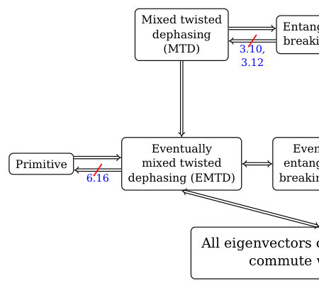
<figcaption class="paper-figure-caption"><b>Fig 1.</b> Figure 1. EEB unital channels and their counterparts in discrete time</figcaption>
</figure>
<figure class="paper-figure-card">
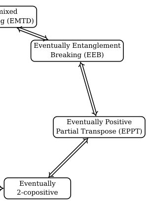
<figcaption class="paper-figure-caption"><b>Fig 2.</b> Figure 2. EEB unital channels and their counterparts in continuous time</figcaption>
</figure>
</div>

<p><strong>Summary.</strong> This theoretical paper fully characterizes eventually entanglement breaking (EEB) unital quantum channels by proving the equivalence of several complex properties, such as being eventually PPT or eventually mixed twisted dephasing. Using advanced tools like matrix integrals, it extends these findings to continuous time quantum Markov semigroups, showing that these dynamics are equivalent to the semigroup being primitive and converging to the maximally mixed state.</p>
<p><strong>Why it may be interesting.</strong> This work provides deep structural insights into the long-term dynamics of open quantum systems, linking concepts like entanglement breaking, quantum process tomography (PPT), and spectral properties (primitivity) into a single, unified mathematical framework.</p>
<details>
<summary>Detailed structure</summary>
<p><strong>Main problem.</strong> The paper aims to provide a complete mathematical characterization of eventually entanglement breaking (EEB) unital quantum channels.</p>
<p><strong>Main result.</strong> It establishes the equivalence of several properties for unital channels, including being EEB, eventually PPT, eventually mixed twisted dephasing, and a specific commutation relation among eigenvectors.</p>
<p><strong>Method.</strong> The authors employ advanced mathematical techniques, including matrix integrals inspired by Watrous, and utilize the theory of equiangular tight frames (ETFs) to characterize extreme points.</p>
<p><strong>Model / system.</strong> The study focuses on quantum channels, which are completely positive and trace-preserving linear maps acting on matrix algebras ($M_d$). The analysis extends to continuous time via quantum Markov semigroups.</p>
<p><strong>Key observables.</strong> The commutation property of eigenvectors corresponding to non-zero eigenvalues with peripheral eigenvectors, and the structure of the Choi matrix $J(\varphi)$.</p>
<p><strong>Important parameters / regimes.</strong> The dimension $d$ of the system, and the time parameter $t$ for continuous semigroups.</p>
<p><strong>Assumptions / limitations.</strong> The analysis heavily relies on the assumption that the quantum channel under consideration is unital.</p>
<p><strong>Figures summary.</strong> Figure 1 illustrates the equivalence relationships between various channel properties (EB, MTD, PPT, etc.) in discrete time, while Figure 2 shows the analogous equivalences for continuous time semigroups.</p>
<p><strong>Paper structure.</strong> The paper first characterizes EB maps using the Choi-Jamiołkowski isomorphism, then extends this to the 'eventually' regime (EEB), establishing equivalences between EEB, eventual PPT, and eventual MTD. It then applies these concepts to continuous time semigroups, proving that these properties are equivalent to the semigroup being primitive and converging to the maximally mixed state.</p>
</details>
<details>
<summary>Abstract</summary>
<p>We obtain a complete characterization of eventually entanglement breaking (EEB) unital channels in terms of some simple commutation properties of their eigenvectors. Specifically, the following properties are equivalent for a unital channel: (i) it is EEB; (ii) it is eventually positive partial transpose (PPT); (iii) it is eventually mixed twisted dephasing; and (iv) its eigenvectors corresponding to non-zero eigenvalues commute with all its peripheral eigenvectors. Similar results hold for one-parameter semigroups of unital quantum channels, where continuity forces such semigroups to become primitive. We employ a matrix integral technique inspired by a result of Watrous. We also characterize the extreme points of the convex set of unital EB channels and, using this characterization and the theory of equiangular tight frames (ETFs), identify several extreme points beyond the twisted dephasing channels.</p>
</details>
<p><sub><a href="#top">↑ back to top</a></sub></p>

<p><a id="paper-2609.24160"></a></p>
<h3 id="derivation-of-the-thiele-equation-for-magnetic-skyrmions-using-the-mori-zwanzig-formalism"><a href="http://arxiv.org/abs/2609.24160v1">Derivation of the Thiele equation for magnetic skyrmions using the Mori-Zwanzig formalism</a></h3>
<p><strong>Authors:</strong> Michael te Vrugt, Mathias Kläui<br>
<strong>Type:</strong> theory · <strong>Category:</strong> statistical mechanics · <strong>PDF:</strong> <a href="https://arxiv.org/pdf/2609.24160v1">https://arxiv.org/pdf/2609.24160v1</a><br>
<strong>Analysis basis:</strong> full PDF text, analyzed in chunks
<strong>Topic relevance:</strong> <code>Keldysh / 2PI / non-Gaussian methods</code> <strong>1/5</strong> · <code>correlated / nonlocal dissipation</code> <strong>1/5</strong> · <code>driven-dissipative phase transition</code> <strong>1/5</strong> · <code>methods for driven-dissipative</code> <strong>1/5</strong> · <code>non-equilibrium universality</code> <strong>1/5</strong> · <code>quantum measurements</code> <strong>1/5</strong></p>
<div class="figure-strip-hint">↔ Scroll figures horizontally</div>
<div class="paper-figures-scroll">
<figure class="paper-figure-card">
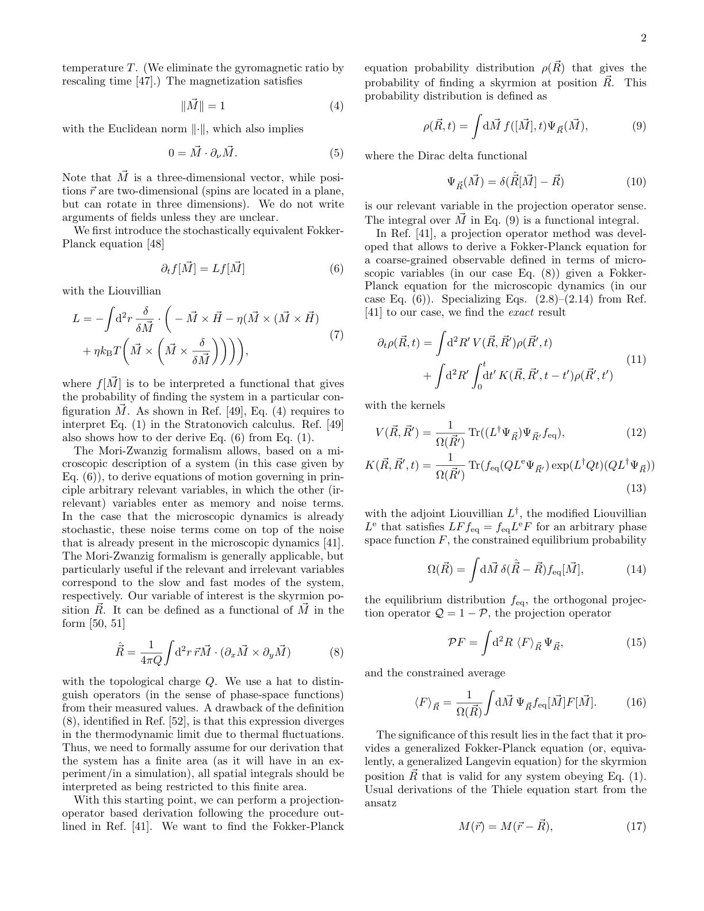
<figcaption class="paper-figure-caption"><b>Fig 1.</b> Low-resolution page preview, page 2</figcaption>
</figure>
<figure class="paper-figure-card">
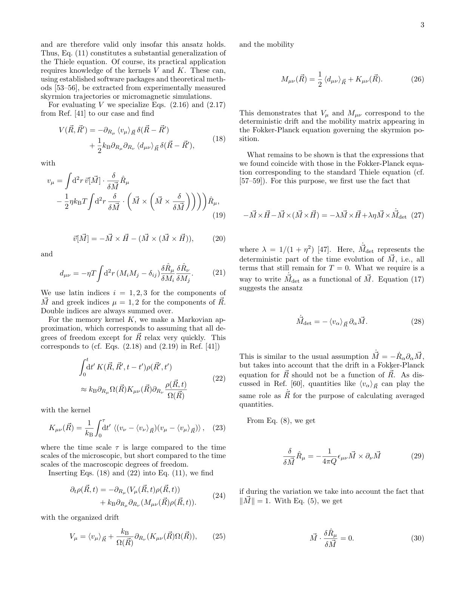
<figcaption class="paper-figure-caption"><b>Fig 2.</b> Low-resolution page preview, page 3</figcaption>
</figure>
<figure class="paper-figure-card">
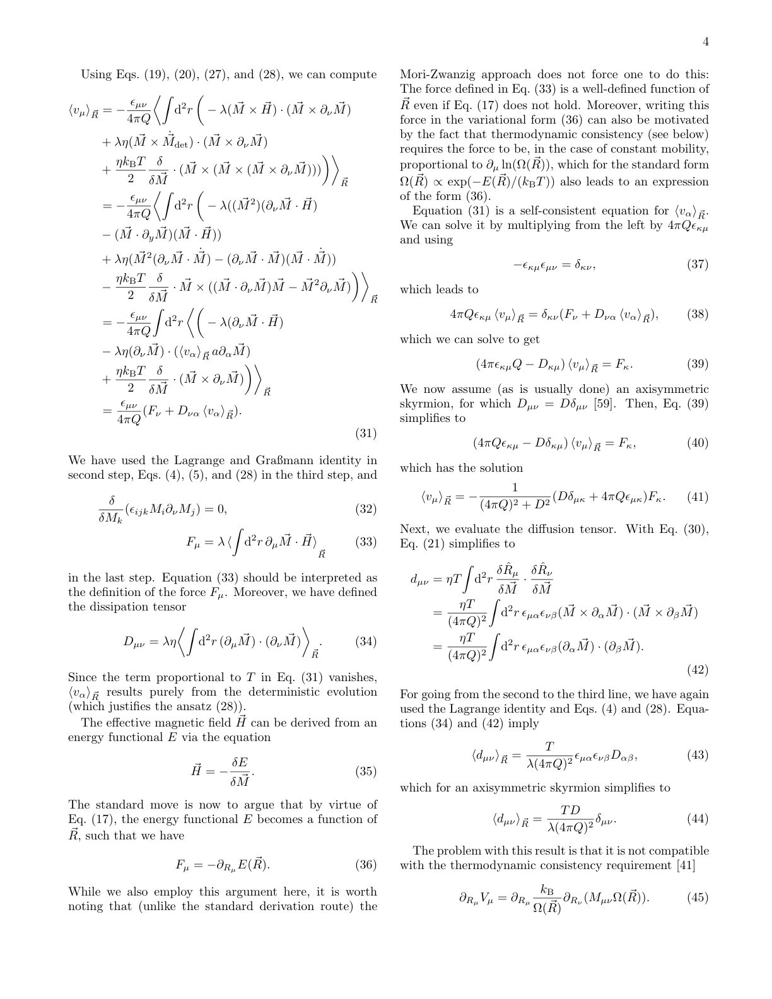
<figcaption class="paper-figure-caption"><b>Fig 3.</b> Low-resolution page preview, page 4</figcaption>
</figure>
<figure class="paper-figure-card">
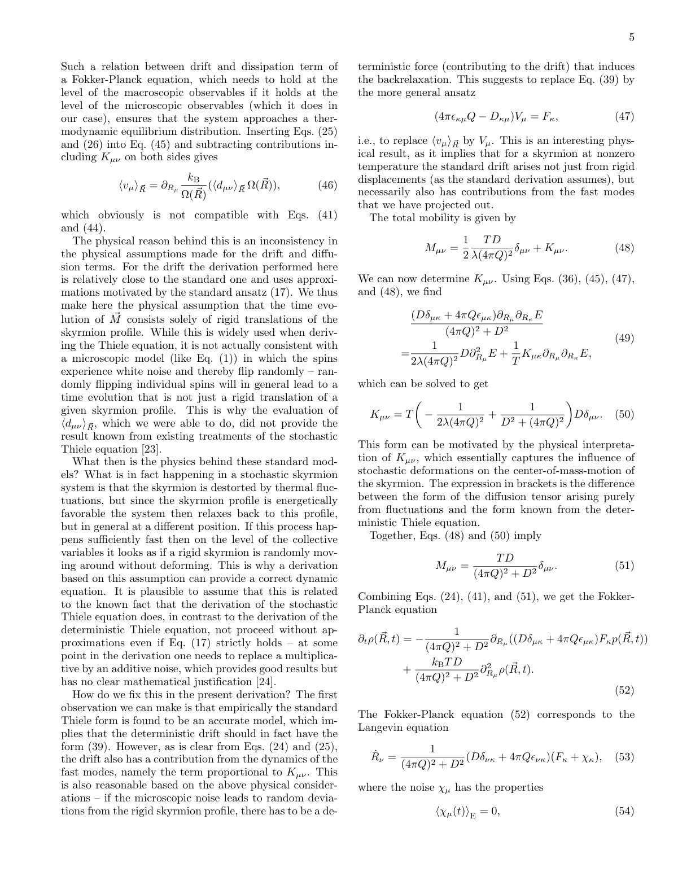
<figcaption class="paper-figure-caption"><b>Fig 4.</b> Low-resolution page preview, page 5</figcaption>
</figure>
<figure class="paper-figure-card">
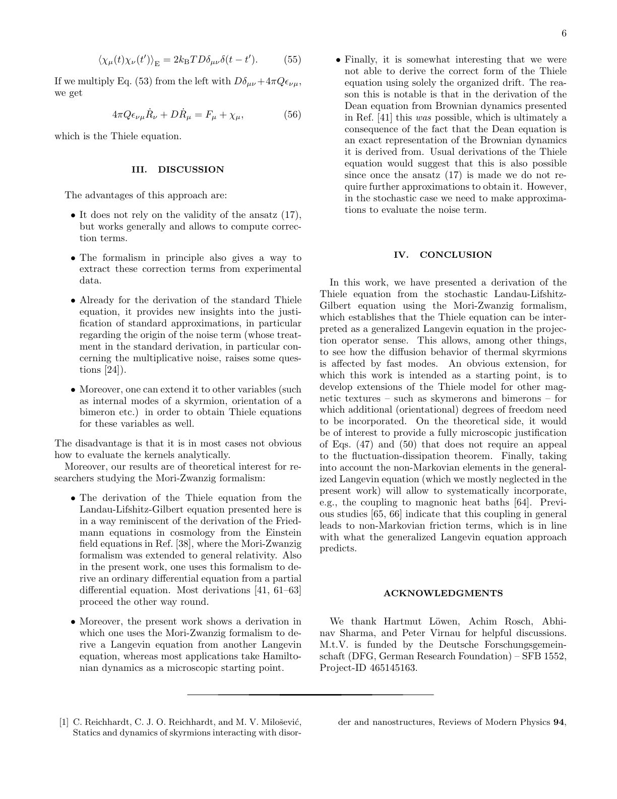
<figcaption class="paper-figure-caption"><b>Fig 5.</b> Low-resolution page preview, page 6</figcaption>
</figure>
</div>

<p><strong>Summary.</strong> This work uses the advanced Mori-Zwanzig formalism to derive a generalized Langevin equation for magnetic skyrmion dynamics from the stochastic LLG equation. It successfully generalizes the standard Thiele equation by providing a rigorous framework that accounts for complex dynamics beyond simple rigid translations. This offers a powerful theoretical tool for studying magnetic textures in condensed matter systems.</p>
<p><strong>Why it may be interesting.</strong> The use of the Mori-Zwanzig formalism to derive transport equations for extended objects like skyrmions provides a rigorous, general theoretical framework for non-equilibrium dynamics, which is highly relevant to open quantum systems and many-body dynamics.</p>
<details>
<summary>Detailed structure</summary>
<p><strong>Main problem.</strong> The paper aims to derive an exact generalized Langevin equation governing the dynamics of magnetic skyrmions, starting from the stochastic Landau-Lifshitz-Gilbert equation.</p>
<p><strong>Main result.</strong> The derived equation is a substantial generalization of the standard Thiele equation, providing a general route for describing the dynamics of magnetic textures beyond the standard rigid translation assumption.</p>
<p><strong>Method.</strong> The core method is the Mori-Zwanzig projection operator formalism applied to the stochastic dynamics, leading to a generalized Fokker-Planck equation for the skyrmion position probability density.</p>
<p><strong>Model / system.</strong> The system under study is magnetic skyrmions, which are particle-like spin textures in magnetic materials. The dynamics are modeled using the stochastic Landau-Lifshitz-Gilbert equation.</p>
<p><strong>Key observables.</strong> The probability density $
ho(\vec{R}, t)$ for the skyrmion position $\vec{R}$, and the derived drift ($\mathbf{V}_\mu$) and mobility ($\mathbf{M}_{\mu
u}$) terms.</p>
<p><strong>Important parameters / regimes.</strong> The derivation is sensitive to the assumption of finite area for the skyrmion and the approximations made regarding fast modes and memory kernels.</p>
<p><strong>Assumptions / limitations.</strong> Key assumptions include the Markovian approximation for the memory kernel and, ultimately, making physical assumptions (like rigid translation) to reconcile the general formalism with known results.</p>
<p><strong>Figures summary.</strong> Not specified in the notes, but the derivation involves equations for the generalized Fokker-Planck equation, the resulting equation of motion, and the final Langevin equation.</p>
<p><strong>Paper structure.</strong> The paper proceeds by establishing the stochastic dynamics via the LLG equation, applying the Mori-Zwanzig formalism to project the dynamics onto the slow variables (skyrmion position), and then deriving the generalized Fokker-Planck equation, culminating in the comparison and reduction to the Thiele equation.</p>
</details>
<details>
<summary>Abstract</summary>
<p>We use the Mori-Zwanzig formalism to derive an exact generalized Langevin equation governing the dynamics of magnetic skyrmions. Using standard approximations, this generalized Langevin equation is found to reduce to the usual Thiele equation. Our approach provides a general route for obtaining extensions of the Thiele equation applicable to magnetic textures and degrees of freedom not covered by the standard derivation route. It also provides some insights into the microscopic justification of the standard Thiele equation, specifically concerning contributions of fast modes to the form of the drift and diffusion terms in the Fokker-Planck equation for skyrmions.</p>
</details>
<p><sub><a href="#top">↑ back to top</a></sub></p>

<p><a id="paper-2609.24529"></a></p>
<h3 id="phase-diagram-morphology-shapes-droplet-propulsion-in-chemical-gradients"><a href="http://arxiv.org/abs/2609.24529v1">Phase diagram morphology shapes droplet propulsion in chemical gradients</a></h3>
<p><strong>Authors:</strong> Stefan Köstler, Malcolm Steen, David Zwicker<br>
<strong>Type:</strong> theory · <strong>Category:</strong> statistical mechanics · <strong>PDF:</strong> <a href="https://arxiv.org/pdf/2609.24529v1">https://arxiv.org/pdf/2609.24529v1</a><br>
<strong>Analysis basis:</strong> full PDF text, analyzed in chunks
<strong>Topic relevance:</strong> <code>Frenkel-Kontorova</code> <strong>1/5</strong> · <code>Keldysh / 2PI / non-Gaussian methods</code> <strong>1/5</strong> · <code>analog quantum simulation</code> <strong>1/5</strong> · <code>driven-dissipative phase transition</code> <strong>1/5</strong> · <code>methods for driven-dissipative</code> <strong>1/5</strong> · <code>non-equilibrium universality</code> <strong>1/5</strong></p>
<div class="figure-strip-hint">↔ Scroll figures horizontally</div>
<div class="paper-figures-scroll">
<figure class="paper-figure-card">
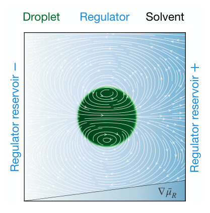
<figcaption class="paper-figure-caption"><b>Fig 1.</b> FIG. 1. Droplets move in regulator gradients. Droplet material (green) segregates from a solvent and a regulator component forming a gradient (blue) due to coupling to dif- ferent reservoirs on the left (−) and right (+). The resulting interfacial stresses lead to advective flows (white streamlines), which propel the droplet to the right.</figcaption>
</figure>
<figure class="paper-figure-card">
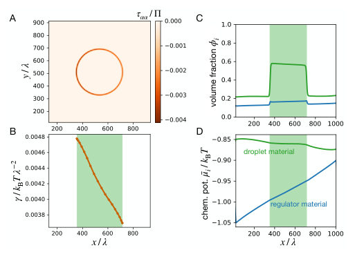
<figcaption class="paper-figure-caption"><b>Fig 2.</b> FIG. 2. Regulator gradient controls surface tension. (A) Simulation snapshot of the trace of capillary stress, ταα = −kBT</figcaption>
</figure>
<figure class="paper-figure-card">
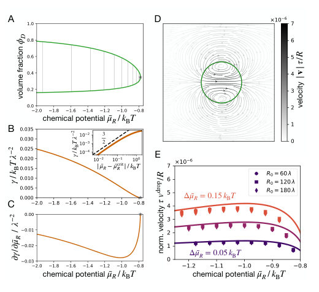
<figcaption class="paper-figure-caption"><b>Fig 3.</b> FIG. 3. Local chemical potential sets surface ten- sion. (A) Semi-grand-canonical phase diagram as a function of the fraction ϕD of droplet material and the chemical po- tential ¯µR of regulator. Tie lines (gray) connect coexisting fractions of droplet material (green) for ¯µR smaller than the critical value (star) (B) Surface tension γ as a function of ¯µR. Inset indicates critical scaling γ ∼|¯µR −¯µcrit R |3/2. (C) Derivative ∂γ/∂¯µR as a function of ¯µR. (D) Streamlines and magnitude (gray scale) of velocity field vα corresponding to simulation shown in Fig. 2. Green line indicates droplet inter- face defined as ϕD = 0.42 (E) Normalized speed vdrop/R as a function of ¯µR at droplet...</figcaption>
</figure>
<figure class="paper-figure-card">
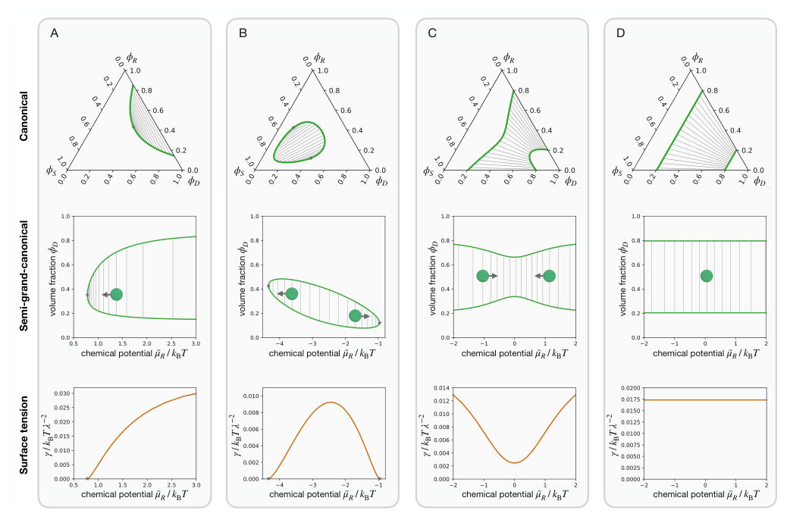
<figcaption class="paper-figure-caption"><b>Fig 4.</b> FIG. 4. Phase diagrams predict droplet motion. Canonical phase diagram (upper row), grand-canonical phase diagram (middle row), and surface tension γ as a function of chemical potential ¯µR (lower row) of four qualitatively different cases (columns). Tie lines (gray) connect coexisting fractions of droplet material (green); Critical points are marked as stars. (A) One critical point for χDS = 1.3, χDR = 2.5, and χRS = 1.7. (B) Two critical points for χDS = 0.5, χDR = −7, and χRS = 0.5. (C) No critical point for χDS = 2.3, χDR = 2.3, and χRS = 0.9. (D) Marginal case without critical points for χDS = 2.3, χDR = 2.3, and χRS = 0. (A–D) κij = −λ2(χij −χiS −χSj) for i, j = D, R, except in panel...</figcaption>
</figure>
<figure class="paper-figure-card">
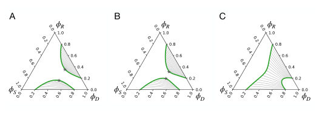
<figcaption class="paper-figure-caption"><b>Fig 5.</b> FIG. 5. Similarity of phase diagrams informs droplet motion in absence of critical points. Canonical phase diagrams at χDS = χDR = 2.3 and χRS = {1.5, 1.3, 0.9} (left-to-right). Tie lines (gray) connect coexisting fractions of droplet material (green); Critical points are marked by stars.</figcaption>
</figure>
</div>

<p><strong>Summary.</strong> This work develops a general theory showing that droplets move in chemical gradients due to interfacial stresses arising from the fluid's phase behavior, even without surfactants. By applying a thin-interface approximation, the authors derive a velocity expression linking motility directly to the gradient of surface tension with respect to the chemical potential. This establishes a powerful predictive tool for designing active matter systems based on thermodynamics.</p>
<p><strong>Why it may be interesting.</strong> While focused on classical soft matter, the rigorous derivation connecting macroscopic transport (motility) directly to the underlying thermodynamic phase diagram structure is highly relevant to understanding non-equilibrium dynamics in complex quantum or many-body systems.</p>
<details>
<summary>Detailed structure</summary>
<p><strong>Main problem.</strong> The paper investigates the general mechanism by which droplets move (propel) in complex environments subjected to compositional gradients, showing this propulsion arises from phase behavior rather than requiring explicit surfactants.</p>
<p><strong>Main result.</strong> The droplet velocity is derived to depend on the gradient of the surface tension with respect to the chemical potential of the regulating component, predicting movement toward regions of lower thermodynamic stability (dia-lytaxis).</p>
<p><strong>Method.</strong> The authors employ a thin-interface approximation to simplify the momentum and mass conservation equations, leading to a force balance determined by the surface tension gradient.</p>
<p><strong>Model / system.</strong> The system models droplets immersed in a complex fluid mixture characterized by multiple volume fractions ($\phi_i$) and governed by free energy density derived from Flory-Huggins theory. The dynamics are solved using continuum field theories.</p>
<p><strong>Key observables.</strong> Droplet velocity ($v_\alpha$), interfacial stress ($\sigma_{\alphaeta}$), and the surface tension ($\gamma$) as a function of chemical potential.</p>
<p><strong>Important parameters / regimes.</strong> Droplet size ($R$), viscosity ($\eta$), chemical potential gradient ($\partial ar{\mu}_R / \partial \alpha$), and the sensitivity of surface tension to the regulator ($\partial \gamma / \partial ar{\mu}_R$).</p>
<p><strong>Assumptions / limitations.</strong> Key assumptions include the thin-interface approximation, quasi-stationarity, and neglecting certain viscous stress contributions in the final force balance.</p>
<p><strong>Figures summary.</strong> Figures illustrate droplet movement in gradients, show the localization of stress tensors at the interface, and plot the phase diagram and the relationship between surface tension and chemical potential.</p>
<p><strong>Paper structure.</strong> The paper builds from general fluid dynamics equations (mass/momentum conservation) to derive thin-interface boundary conditions, ultimately yielding a compact expression for the droplet velocity driven by the phase diagram's morphology.</p>
</details>
<details>
<summary>Abstract</summary>
<p>Droplets in complex environments often encounter compositional gradients that drive their propulsion. For example, surfactant gradients induce surface-tension-driven propulsion via the Marangoni effect. Here, we show that such propulsion emerges generically, even in the absence of surfactants. Employing a thin-interface approximation, we derive a compact expression for the droplet velocity in terms of droplet size, viscosity, the sensitivity of surface tension to a regulating component, and the chemical potential gradient of that component. Our theory reveals that droplets move toward regions of lower stability, as encoded in the morphology of the phase diagram, particularly near critical points. Numerical simulations confirm these results, which establish a general route to predicting and designing droplet motility from the phase behavior of complex fluids.</p>
</details>
<p><sub><a href="#top">↑ back to top</a></sub></p>

<p><a id="paper-2609.22515"></a></p>
<h3 id="acoustic-dip-in-the-effective-temperature-of-hot-brownian-motion"><a href="http://arxiv.org/abs/2609.22515v1">Acoustic dip in the effective temperature of hot Brownian motion</a></h3>
<p><strong>Authors:</strong> Mayank Srivastava, Dipanjan Chakraborty<br>
<strong>Type:</strong> theory · <strong>Category:</strong> statistical mechanics · <strong>PDF:</strong> <a href="https://arxiv.org/pdf/2609.22515v1">https://arxiv.org/pdf/2609.22515v1</a><br>
<strong>Analysis basis:</strong> full PDF text, analyzed in chunks
<strong>Topic relevance:</strong> <code>Keldysh / 2PI / non-Gaussian methods</code> <strong>1/5</strong> · <code>correlated / nonlocal dissipation</code> <strong>1/5</strong> · <code>driven-dissipative phase transition</code> <strong>1/5</strong> · <code>methods for driven-dissipative</code> <strong>1/5</strong> · <code>non-equilibrium universality</code> <strong>1/5</strong></p>
<div class="figure-strip-hint">↔ Scroll figures horizontally</div>
<div class="paper-figures-scroll">
<figure class="paper-figure-card">
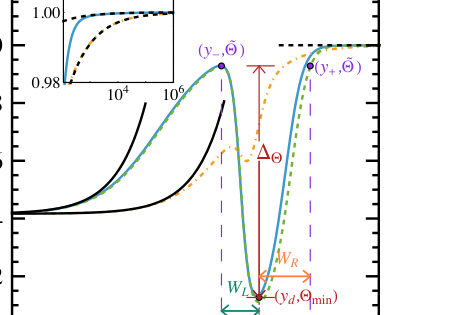
<figcaption class="paper-figure-caption"><b>Fig 1.</b> FIG. 1. Frequency-dependent effective temperature Θ(ω) = [T (ω) −T0]/∆T plotted as a function of the dimensionless variable y = akc = aω/c. The curves correspond to a small particle with a = 5σ immersed in a Lennard–Jones solvent (dash-dotted line), a much larger particle a = 1000σ in the same solvent, and for a particle of radius 1 µm in water. Com- pressibility produces a pronounced dip near y = O(1) when the acoustic wavelength is comparable to the particle size. The low-frequency limit is the incompressible hot-Brownian value 5/12, while the high-frequency limit approaches the sur- face temperature, Θ →1.</figcaption>
</figure>
<figure class="paper-figure-card">
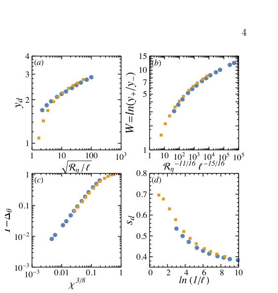
<figcaption class="paper-figure-caption"><b>Fig 2.</b> FIG. 3. Scaling of the acoustic-dip geometry. The pan- els show (a) the minimum position yd versus Xχ = p</figcaption>
</figure>
</div>

<p><strong>Summary.</strong> This theoretical work analyzes the effective temperature of a Brownian particle in a non-uniformly heated fluid, moving beyond the standard incompressible assumption. By incorporating solvent compressibility, the authors predict a distinct 'acoustic dip' in the temperature spectrum. This dip occurs when acoustic wavelengths match the particle size, revealing a mechanism where energy dissipation is weighted by colder regions of the temperature field.</p>
<p><strong>Why it may be interesting.</strong> The study of non-equilibrium fluctuations and effective temperatures in complex fluids provides insights into energy dissipation mechanisms that are relevant to open quantum systems and thermalization processes.</p>
<details>
<summary>Detailed structure</summary>
<p><strong>Main problem.</strong> The paper investigates how the compressibility of the solvent affects the frequency-dependent effective temperature of a hot Brownian particle driven by non-uniform heating.</p>
<p><strong>Main result.</strong> It predicts a pronounced 'acoustic dip' in the effective temperature when the acoustic wavelength matches the particle radius, demonstrating that compressibility can lower, rather than raise, the kinetic noise temperature.</p>
<p><strong>Method.</strong> The analysis uses fluctuating hydrodynamics to solve the problem for a heated sphere, calculating the effective temperature ratio $\Theta(\omega)$ from the ratio of noise and dissipation terms.</p>
<p><strong>Model / system.</strong> The system is a Brownian particle (modeled as a sphere of radius $a$) suspended in a solvent undergoing non-uniform heating, leading to non-equilibrium thermal fluctuations.</p>
<p><strong>Key observables.</strong> Effective noise temperature ratio $\Theta(\omega)$, the depth and position of the acoustic dip.</p>
<p><strong>Important parameters / regimes.</strong> Dimensionless frequency $y = a\omega/c$, viscous-acoustic attenuation length $\ell = ac/a$, and the ratio of viscous to acoustic dissipation ($\chi$).</p>
<p><strong>Assumptions / limitations.</strong> The analysis involves asymptotic expansions in different frequency regimes (high vs. low frequency) and often assumes the large-particle limit for simplified calculations.</p>
<p><strong>Figures summary.</strong> Figures illustrate the acoustic dip in $\Theta(\omega)$ versus $y = a k_c$, showing the minimum near $y=O(1)$ and analyzing the scaling of the dip's width and depth.</p>
<p><strong>Paper structure.</strong> The paper builds from the general fluctuating hydrodynamic framework to derive the effective temperature ratio $\Theta(\omega)$. It then analyzes the limiting cases (high/low frequency) and focuses on the intermediate regime where the acoustic dip appears, deriving scaling laws for its minimum position and depth.</p>
</details>
<details>
<summary>Abstract</summary>
<p>A hot Brownian particle is driven by thermal fluctuations from a   nonuniformly heated solvent and therefore obeys a   fluctuation-dissipation relation with a frequency-dependent   effective temperature. Existing theories assume an incompressible   solvent. We show that finite sound speed qualitatively changes this   effective temperature in the kinetic regime. Solving the   compressible fluctuating-hydrodynamic problem for a heated sphere,   we find that the effective noise temperature develops a pronounced   acoustic dip when the sound wavelength becomes comparable to the   particle radius. The dip occurs because weakly attenuated   longitudinal modes carry mechanical energy away from the heated   surface before it is dissipated, so that the dissipation is weighted   by colder regions of the temperature field. Its position is set by   $aω/c=\mathcal{O}(1)$, while its depth is controlled by the   dimensionless viscous-acoustic attenuation length $a_c/a$. The   result identifies an acoustic window in hot Brownian motion in which   compressibility lowers, rather than raises, the kinetic noise   temperature.</p>
</details>
<p><sub><a href="#top">↑ back to top</a></sub></p>

<p><a id="paper-2609.22965"></a></p>
<h3 id="exact-realization-of-deep-relu-computation-in-a-microscopic-statistical-mechanical-system"><a href="http://arxiv.org/abs/2609.22965v1">Exact Realization of Deep ReLU Computation in a Microscopic Statistical-Mechanical System</a></h3>
<p><strong>Authors:</strong> Junxu Li<br>
<strong>Type:</strong> theory · <strong>Category:</strong> disordered systems and neural networks · <strong>PDF:</strong> <a href="https://arxiv.org/pdf/2609.22965v1">https://arxiv.org/pdf/2609.22965v1</a><br>
<strong>Analysis basis:</strong> full PDF text, analyzed in chunks
<strong>Topic relevance:</strong> <code>Keldysh / 2PI / non-Gaussian methods</code> <strong>1/5</strong> · <code>analog quantum simulation</code> <strong>1/5</strong> · <code>driven-dissipative phase transition</code> <strong>1/5</strong> · <code>methods for driven-dissipative</code> <strong>1/5</strong> · <code>non-equilibrium universality</code> <strong>1/5</strong></p>
<div class="figure-strip-hint">↔ Scroll figures horizontally</div>
<div class="paper-figures-scroll">
<figure class="paper-figure-card">
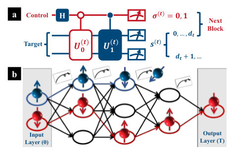
<figcaption class="paper-figure-caption"><b>Fig 1.</b> FIG. 1: Physical realization of an affine transformation and its fermionic transport interpretation. (a) A quantum circuit block implementing the affine map f W (t). After measurement, the control and target outcomes are recorded as σ(t) ∈{0, 1} and s(t), respectively. Shots with s(t) ∈{1, . . . , dt} are passed to the next block, whereas shots with s(t) &gt; dt are discarded. (b) Representation as a fermionic transport model. The tth column contains dt effective sites, and each spin-1/2 fermion represents one shot. The fermion propagates from one column to the next, eg, from site st−1 in the t −1-th column to the st site in the next, where spin-up and spin-down states correspond to σ(t) = 0...</figcaption>
</figure>
<figure class="paper-figure-card">
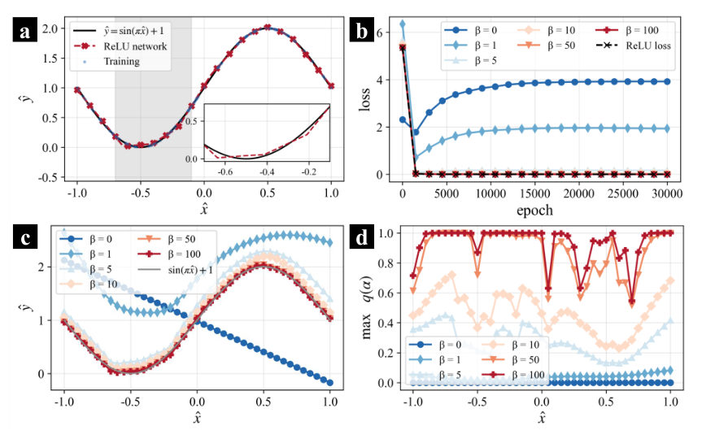
<figcaption class="paper-figure-caption"><b>Fig 2.</b> FIG. 2: Exact mapping and temperature-driven condensation. (a) Prediction of the trained ReLU network (red dashed line) versus the target ˆy = sin(πˆx) + 1 (black solid line). Inset: zoom-in showing the piecewise linearity. (b) Comparison of the training loss (black dashed line) and the ensemble loss (solid lines) across different β. (c) The rescaled output (QT τ=0 C(τ))g for various β, showing the transition from a disordered linear state (β = 0) to the exact ReLU output (β = 100). (d) Maximum probability max q(α) versus input ˆx, demonstrating the condensation to the eα.</figcaption>
</figure>
<figure class="paper-figure-card">
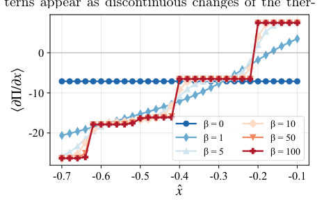
<figcaption class="paper-figure-caption"><b>Fig 3.</b> FIG. 3: First-order phase transition underlying ReLU piecewise linearity. The derivative ⟨∂Π/∂x⟩as a function of input ˆx for various β. At low β, The derivative is continuous (β = 0, flat line). As β increases, discontinuities emerge (β = 100, red crosses). These discontinuities align exactly with the boundaries of the linear pieces in the ReLU network (see Fig. 1(a)), demonstrating that the piecewise linear behavior is a macroscopic manifestation of a first-order phase transition.</figcaption>
</figure>
</div>

<p><strong>Summary.</strong> This work provides an exact physical foundation for deep ReLU network computation by mapping it onto a microscopic statistical-mechanical system. The authors show that the network's piecewise-linear behavior arises precisely from a first-order phase transition within the system's thermodynamics. This establishes a deep link between condensed matter physics concepts and modern machine learning theory.</p>
<p><strong>Why it may be interesting.</strong> The connection between phase transitions in statistical mechanics and the sharp, non-analytic behavior (piecewise linearity) of deep learning models provides a novel physical lens for understanding artificial intelligence.</p>
<details>
<summary>Detailed structure</summary>
<p><strong>Main problem.</strong> The paper addresses the fundamental challenge of finding a physical origin for the piecewise-linear computation characteristic of deep ReLU networks.</p>
<p><strong>Main result.</strong> It establishes an exact statistical-mechanical realization of arbitrary deep ReLU networks, showing that their behavior emerges from a first-order phase transition in the underlying microscopic system.</p>
<p><strong>Method.</strong> The authors use statistical mechanics, analyzing a partition function derived from a microscopic configuration space, and taking the zero-temperature limit ($eta 	o +\infty$).</p>
<p><strong>Model / system.</strong> The model is a microscopic statistical-mechanical system, equivalently described by cascaded quantum operations with post-selection or a fermionic transport model.</p>
<p><strong>Key observables.</strong> Population imbalance ($z(t)$), hidden states, outputs, and the loss function of the ReLU network.</p>
<p><strong>Important parameters / regimes.</strong> The inverse temperature parameter $eta$, which is taken to $+\infty$ (zero-temperature limit).</p>
<p><strong>Assumptions / limitations.</strong> The analysis relies heavily on the zero-temperature limit ($eta 	o +\infty$) and the interpretation of the system dynamics via fermionic transport.</p>
<p><strong>Figures summary.</strong> Figures illustrate the physical realization of affine transformations using quantum circuits and fermionic transport models, and plot the derivative of the effective potential showing discontinuities coinciding with ReLU boundaries.</p>
<p><strong>Paper structure.</strong> The paper progresses by first defining the physical system and its quantum/fermionic descriptions, then deriving the partition function using post-selection, and finally proving the correspondence by analyzing the ensemble average in the $eta 	o +\infty$ limit.</p>
</details>
<details>
<summary>Abstract</summary>
<p>Understanding the physical origin of the piecewise-linear computation in deep rectified linear unit (ReLU) networks remains a fundamental challenge. Here we establish an exact statistical-mechanical realization of arbitrary ReLU networks. Starting from a microscopic configuration space and its state multiplicities, we construct a partition function without prescribing a neural-network activation function. The resulting system admits equivalent descriptions in terms of cascaded quantum operations with post selection, or fermionic transport model. We rigorously prove that in $β\to+\infty$ limit, the thermodynamic observables of this system exactly reproduce the hidden states, outputs, and loss function of an arbitrary deep ReLU network. Crucially, we demonstrate that the piecewise-linear behavior of the ReLU network emerges from a first-order phase transition in the microscopic system, where the discontinuities precisely coincide with the boundaries of linear regions of ReLU network. This work establishes an exact physical foundation for deep neural computation and provides a novel statistical-mechanical perspective on neural architecture design.</p>
</details>
<p><sub><a href="#top">↑ back to top</a></sub></p>

<p><a id="paper-2609.23850"></a></p>
<h3 id="fluid-flow-as-transport-of-probability-entropy-compressibility-and-irreversibility"><a href="http://arxiv.org/abs/2609.23850v1">Fluid Flow as Transport of Probability: Entropy, Compressibility, and Irreversibility</a></h3>
<p><strong>Authors:</strong> Ankit Bhattacharjee<br>
<strong>Type:</strong> theory · <strong>Category:</strong> statistical mechanics · <strong>PDF:</strong> <a href="https://arxiv.org/pdf/2609.23850v1">https://arxiv.org/pdf/2609.23850v1</a><br>
<strong>Analysis basis:</strong> full PDF text, analyzed in chunks
<strong>Topic relevance:</strong> <code>Keldysh / 2PI / non-Gaussian methods</code> <strong>1/5</strong> · <code>analog quantum simulation</code> <strong>1/5</strong> · <code>driven-dissipative phase transition</code> <strong>1/5</strong> · <code>non-equilibrium universality</code> <strong>1/5</strong> · <code>quantum measurements</code> <strong>1/5</strong></p>
<div class="figure-strip-hint">↔ Scroll figures horizontally</div>
<div class="paper-figures-scroll">
<figure class="paper-figure-card">
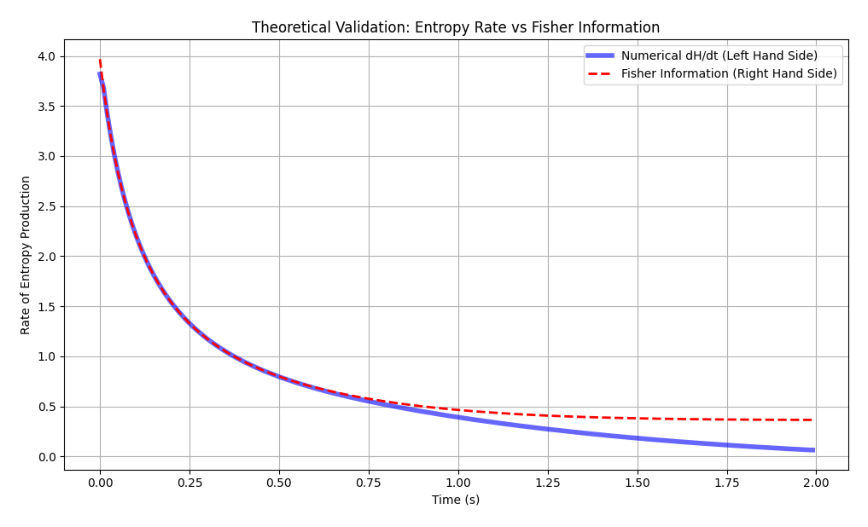
<figcaption class="paper-figure-caption"><b>Fig 1.</b> Figure 1: Comparison of the numerical rate of entropy production (Left-Hand Side) and the theoretical Fisher Information (Right-Hand Side) over time for a 1D diffusing Gaussian distribution. The precise overlap in the initial phase computationally validates the localized entropy source derived in Equation (29). The divergence observed at t &gt; 0.6 s highlights the boundary effect as the probability distribution interacts with the finite computational domain, reinforcing the necessity of the unbounded spatial assumption.</figcaption>
</figure>
<figure class="paper-figure-card">
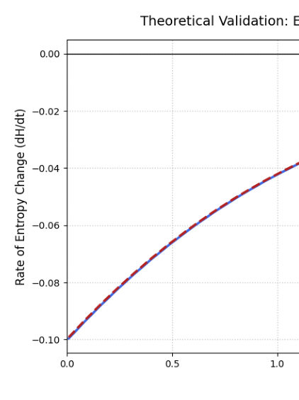
<figcaption class="paper-figure-caption"><b>Fig 2.</b> Figure 2: Comparison of the numerically evaluated dH</figcaption>
</figure>
<figure class="paper-figure-card">
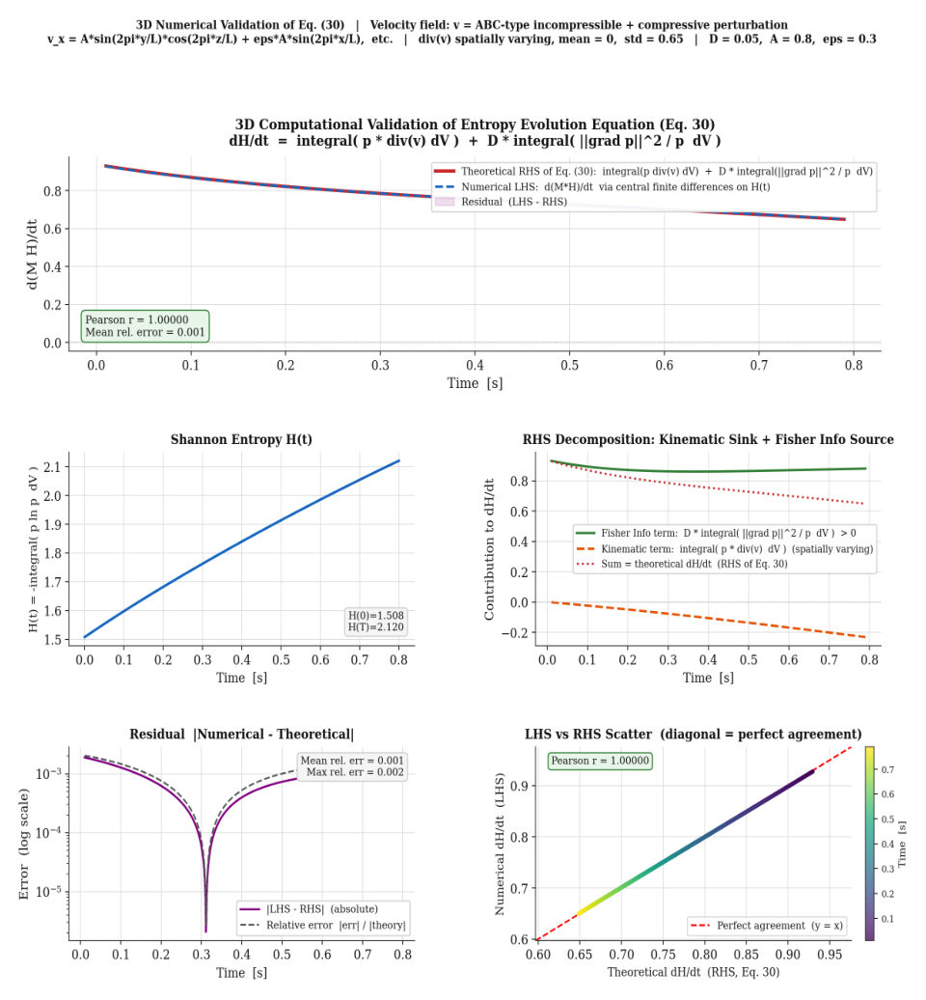
<figcaption class="paper-figure-caption"><b>Fig 3.</b> Figure 3: Computational validation of Equation (30) under a 3D spatially varying ABC-type velocity field. The near-perfect superimposition (mean relative error = 0.001) of the numerical entropy derivative and the theoretically computed kinematic and Fisher Information sources validates the universality of the derived framework.</figcaption>
</figure>
</div>

<p><strong>Summary.</strong> This paper reinterprets fluid flow by treating density as a probability distribution, allowing the use of Shannon entropy to quantify uncertainty. It derives that entropy generation results from two sources: the macroscopic compressibility of the flow and the irreversible effects of microscopic diffusion, quantified by the Fisher Information. This framework offers an analytical tool to study thermodynamic irreversibility in diverse engineering and physical systems.</p>
<p><strong>Why it may be interesting.</strong> While focused on classical fluid dynamics, the rigorous connection between macroscopic irreversibility (entropy generation) and information-theoretic measures (Shannon entropy/Fisher Information) provides a powerful, general framework applicable to non-equilibrium quantum dynamics where entropy production is key.</p>
<details>
<summary>Detailed structure</summary>
<p><strong>Main problem.</strong> To provide an informational interpretation of macroscopic fluid flow by treating fluid density as a spatial probability density function and deriving the temporal evolution of Shannon entropy.</p>
<p><strong>Main result.</strong> The entropy evolution is governed by terms related to macroscopic compressibility and a strictly positive source term derived from microscopic diffusion, quantified by the Fisher Information.</p>
<p><strong>Method.</strong> The authors derive the entropy evolution equation by recasting the continuity equation as a conservation of probability and applying the divergence theorem.</p>
<p><strong>Model / system.</strong> The model describes fluid flow using the continuity equation, treating density as a probability density $p(\mathbf{r}; t)$. The analysis progresses from purely advective transport to include diffusive transport.</p>
<p><strong>Key observables.</strong> Shannon Entropy ($H$), Entropy Production Rate ($rac{dH}{dt}$), Fisher Information, and the divergence of the velocity field ($
abla \cdot \mathbf{v}$).</p>
<p><strong>Important parameters / regimes.</strong> Local Peclet number, Diffusivity ($D$), and the mass flux ($\dot{M}$).</p>
<p><strong>Assumptions / limitations.</strong> The derivation assumes the boundary term from the divergence theorem vanishes, and the analysis often assumes constant scalar diffusivity ($D$) and a purely kinematic formulation.</p>
<p><strong>Figures summary.</strong> The notes mention computational validation using finite-difference simulations of one-dimensional canonical flows and advection-diffusion within a three-dimensional Arnold-Beltrami-Childress (ABC) flow.</p>
<p><strong>Paper structure.</strong> The paper establishes the informational framework by deriving the entropy evolution equation from the continuity equation. It then analyzes the contributions of advection (related to compressibility) and diffusion (related to Fisher Information) to the total entropy change, applying this to various physical scenarios like heat transfer and combustion.</p>
</details>
<details>
<summary>Abstract</summary>
<p>The continuity equation serves as a fundamental principle for mass transport in continuous media. While its mathematical structure mirrors that of probability transport and the Liouville equation, an informational interpretation of macroscopic fluid flow is less commonly explored in engineering contexts. This paper treats fluid density as a spatial probability density function, modeling macroscopic motion as the continuous transport of uncertainty. I derive the temporal evolution of Shannon entropy under general flow conditions, establishing how entropy generation depends on macroscopic compressibility and microscopic diffusion. Microscopic diffusion is shown to act as a strictly positive entropy source governed exactly by local Fisher Information. Furthermore, the framework yields an explicit algebraic scaling law characterizing the equilibrium thickness of compressive mixing layers at a local Peclet number of unity. The theoretical model is computationally validated through finite-difference simulations of one-dimensional canonical flows and advection-diffusion within a three-dimensional, spatially varying Arnold-Beltrami-Childress (ABC) flow, yielding a mean relative error of $0.001$. The framework provides an analytical perspective on thermodynamic irreversibility, with potential applications to turbulence modeling, thermal entropy generation in heat exchangers, in-cylinder mixing in internal combustion engines, and aerodynamic flows.</p>
</details>
<p><sub><a href="#top">↑ back to top</a></sub></p>

<p><a id="paper-2609.24326"></a></p>
<h3 id="amorphous-insulating-mosmath1018math-films-deposited-by-magnetron-sputtering-as-a-low-index-optical-coating"><a href="http://arxiv.org/abs/2609.24326v1">Amorphous insulating MoS$_x$ films deposited by magnetron sputtering as a low-index optical coating</a></h3>
<p><strong>Authors:</strong> S. G. Martanov, E. V. Tarkaeva, A. V. Muratov, A. V. Lubenchenko, O. N. Pavlov, A. G. Vitukhnovsky, A. Yu. Kuntsevich<br>
<strong>Type:</strong> experiment · <strong>Category:</strong> disordered systems and neural networks · <strong>PDF:</strong> <a href="https://arxiv.org/pdf/2609.24326v1">https://arxiv.org/pdf/2609.24326v1</a><br>
<strong>Analysis basis:</strong> full PDF text, analyzed in chunks
<strong>Topic relevance:</strong> <code>analog quantum simulation</code> <strong>1/5</strong> · <code>driven-dissipative phase transition</code> <strong>1/5</strong> · <code>interference shaping light</code> <strong>1/5</strong></p>
<div class="figure-strip-hint">↔ Scroll figures horizontally</div>
<div class="paper-figures-scroll">
<figure class="paper-figure-card">
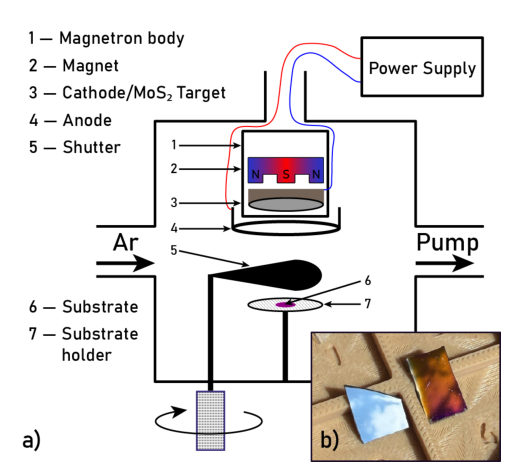
<figcaption class="paper-figure-caption"><b>Fig 1.</b> FIG. 1. a) Home-built DC magnetron sputtering system for MoSx film deposition. b) Photograph of a Si substrate (on the left) and a Si substrate coated with a 25 nm MoSx film (on the right).</figcaption>
</figure>
<figure class="paper-figure-card">
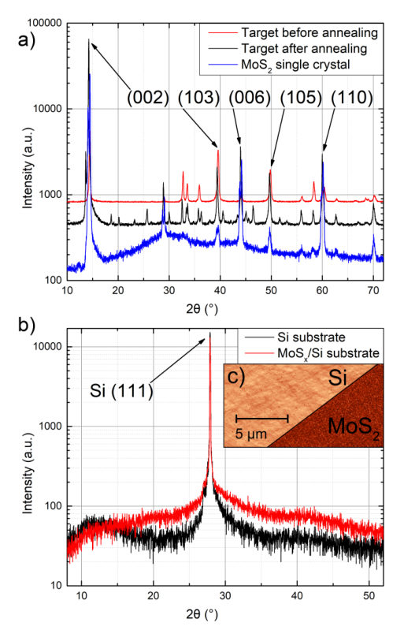
<figcaption class="paper-figure-caption"><b>Fig 2.</b> FIG. 2. X-ray diffraction patterns of the investigated samples. (a) Diffraction patterns of the pressed MoS2 target before annealing, the annealed target, and a bulk 2H-MoS2 single crystal used as a refer- ence. The main reflections of the 2H-MoS2 phase are indexed. The patterns are vertically offset by 300 a.u. for clarity.(b) Comparison of the bare Si substrate and the sputtered MoSx/Si sample. Only the Si(111) substrate reflection is observed for the coated sample. No diffraction peaks corresponding to crystalline MoS2 were detected. The intensity axes in both panels are shown on a logarithmic scale. (c) AFM topography images of the bare Si substrate (upper left) and the sputtered MoSx...</figcaption>
</figure>
<figure class="paper-figure-card">
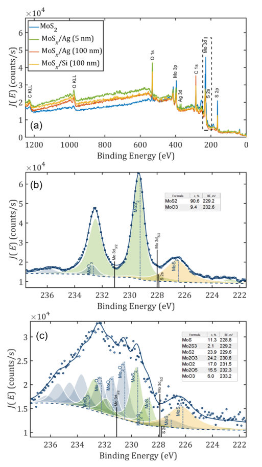
<figcaption class="paper-figure-caption"><b>Fig 3.</b> FIG. 3. XPS spectra of the studied films compared to bulk MoS2. (a) Review spectra; (b) molybdenite crystal (Mo peak) and its decom- position onto MoS2 and MoO3; (b) example of the amorphous film spectrum and its decomposition into series of oxides and sulfides.</figcaption>
</figure>
<figure class="paper-figure-card">
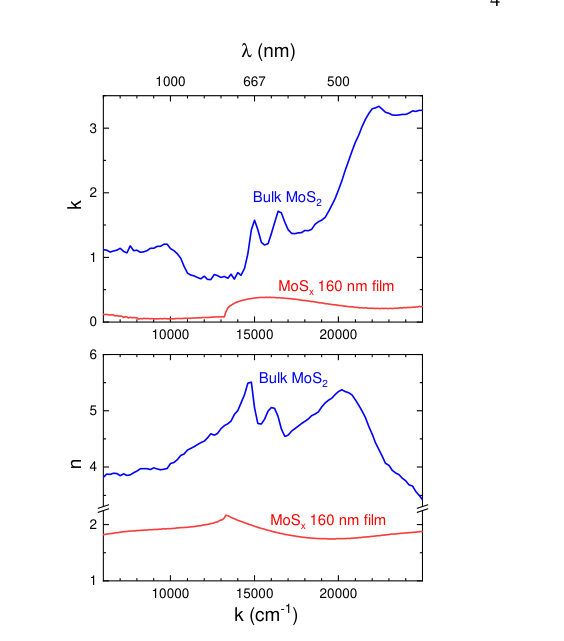
<figcaption class="paper-figure-caption"><b>Fig 4.</b> FIG. 5. Optical constants of the sputtered 160 nm MoSx film and bulk 2H-MoS2: (a) refractive index n, (b) extinction coefficient k as a function of wavelength.</figcaption>
</figure>
<figure class="paper-figure-card">
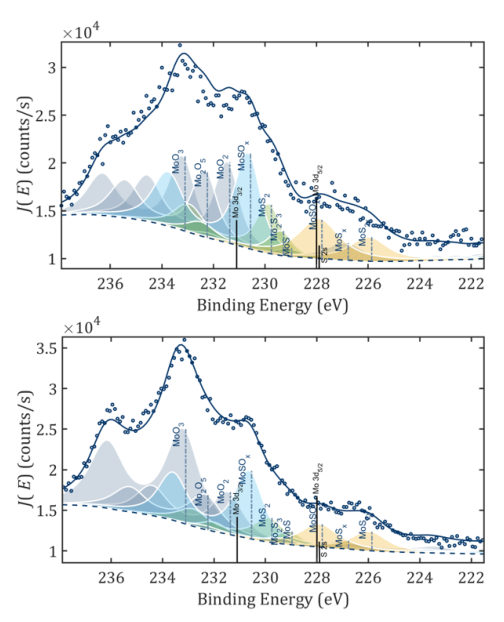
<figcaption class="paper-figure-caption"><b>Fig 5.</b> FIG. 4. Comparison of the Mo 3d XPS spectra of the same film measured immediately after deposition (top) and after two weeks of exposure to ambient air (bottom).</figcaption>
</figure>
</div>

<p><strong>Summary.</strong> This work demonstrates the successful deposition of amorphous, sulfur-deficient MoS$_x$ films using magnetron sputtering. These films exhibit desirable low-index optical properties and insulating behavior, fundamentally differing from crystalline MoS$_2$. The findings establish amorphous MoS$_x$ as a promising, easily fabricated material for advanced integrated photonic devices.</p>
<p><strong>Why it may be interesting.</strong> While the focus is materials science, the study of amorphous films and their electronic/optical properties touches upon concepts relevant to disordered systems, such as localization and band structure modification due to disorder.</p>
<details>
<summary>Detailed structure</summary>
<p><strong>Main problem.</strong> To characterize amorphous MoS$_x$ films deposited by magnetron sputtering as a viable, low-index optical coating alternative to crystalline MoS$_2$.</p>
<p><strong>Main result.</strong> The resulting amorphous MoS$_x$ films are optically isotropic, possess a low refractive index ($\approx 2$), and exhibit insulating behavior, making them promising for integrated photonics.</p>
<p><strong>Method.</strong> The study employed magnetron sputtering for deposition, followed by comprehensive characterization using XRD, XPS, ellipsometry, and AFM.</p>
<p><strong>Model / system.</strong> The physical system is the amorphous insulating MoS$_x$ film, deposited from a MoS$_2$ target, which is chemically characterized as sulfur-deficient ($ ext{MoS}_{1.8}$).</p>
<p><strong>Key observables.</strong> Refractive index ($n \approx 2$), optical losses, sulfur deficiency ($x=1.8$), insulating sheet resistance, and surface oxidation rate ($\approx 0.3 	ext{ nm/week}$).</p>
<p><strong>Important parameters / regimes.</strong> Deposition pressure ($\approx 6-7	imes 10^{-2} 	ext{ mbar}$), spectral range ($400-1500 	ext{ nm}$), and ambient oxidation time (up to 2 weeks).</p>
<p><strong>Assumptions / limitations.</strong> The insulating nature is attributed to the amorphous state and sulfur deficiency, keeping the concentration below the percolation threshold for conductivity.</p>
<p><strong>Figures summary.</strong> Figures show XRD patterns confirming amorphous structure, AFM topography comparing bare Si to coated samples, and XPS/Ellipsometry data comparing the film's optical constants to bulk crystalline MoS$_2$.</p>
<p><strong>Paper structure.</strong> The paper details the sputtering process and characterization techniques, presents results showing the amorphous nature and low optical index, discusses the oxidation dynamics, and concludes by positioning the material for photonic applications.</p>
</details>
<details>
<summary>Abstract</summary>
<p>While much effort are now concentrated on exploration of crystalline form of MoS$_2$ as a two-dimensional material, we show that room-temperature DC magnetron sputtering from pressurized MoS$_2$ powder target produces amorphous MoS$_x$ films with optical properties fundamentally different from those of crystalline MoS$_2$. The films were found to have a sulfur content of approximately $x=1.8$, indicating sulfur deficiency. They are optically isotropic and exhibit rather low optical losses, with a refractive index of about 2 over the visible and near-infrared spectral range. Their compatibility with lift-off lithography and dry etching makes amorphous MoS$_x$ a promising material for integrated photonic applications.</p>
</details>
<p><sub><a href="#top">↑ back to top</a></sub></p>

<p><a id="paper-2609.22535"></a></p>
<h3 id="approaching-the-inverse-neutron-scattering-problem-with-neural-networks"><a href="http://arxiv.org/abs/2609.22535v1">Approaching the Inverse Neutron Scattering Problem with Neural Networks</a></h3>
<p><strong>Authors:</strong> Jingyi Luo, Fletcher Williams, Ang-Kun Wu, David Dahlbom, Cristian D. Batista, Hao Zhang<br>
<strong>Type:</strong> theory · <strong>Category:</strong> strongly correlated electrons · <strong>PDF:</strong> <a href="https://arxiv.org/pdf/2609.22535v1">https://arxiv.org/pdf/2609.22535v1</a><br>
<strong>Analysis basis:</strong> full PDF text, analyzed in chunks
<strong>Topic relevance:</strong> <code>analog quantum simulation</code> <strong>1/5</strong> · <code>methods for driven-dissipative</code> <strong>1/5</strong> · <code>quantum measurements</code> <strong>1/5</strong></p>
<div class="figure-strip-hint">↔ Scroll figures horizontally</div>
<div class="paper-figures-scroll">
<figure class="paper-figure-card">
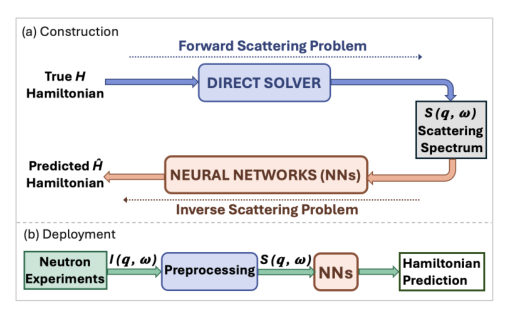
<figcaption class="paper-figure-caption"><b>Fig 1.</b> FIG. 1. Schematic workflow for the construction and deploy- ment of the inverse-scattering model. During construction, a forward solver generates neutron-scattering responses for a family of microscopic Hamiltonians, which are used to train the neural network. During deployment, the trained network infers the Hamiltonian parameters directly from neutron- scattering data.</figcaption>
</figure>
<figure class="paper-figure-card">
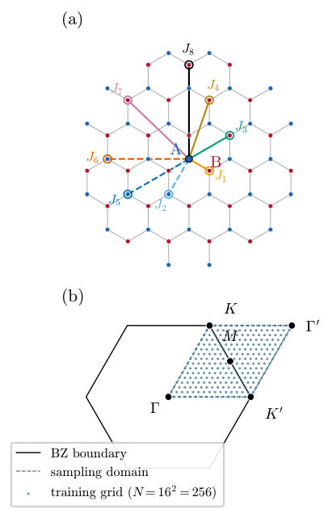
<figcaption class="paper-figure-caption"><b>Fig 2.</b> FIG. 2. (a) Honeycomb lattice showing sublattices A (blue) and B (red), with nearest-neighbor bonds in gray. Colored lines mark one representative of each isotropic Heisenberg ex- change coupling J1–J8 from a reference A site; solid (dashed) lines connect opposite (same) sublattices. (b) Uniform 16×16 momentum grid (256 points) used to generate the training spectra. The dashed parallelogram, bounded by Γ, K, Γ′, and K′, marks the sampling domain; its area is one third that of the first Brillouin zone (solid boundary).</figcaption>
</figure>
<figure class="paper-figure-card">
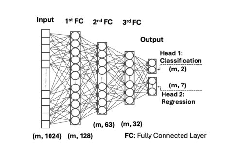
<figcaption class="paper-figure-caption"><b>Fig 3.</b> FIG. 3. Architecture of the FCNN model.</figcaption>
</figure>
<figure class="paper-figure-card">
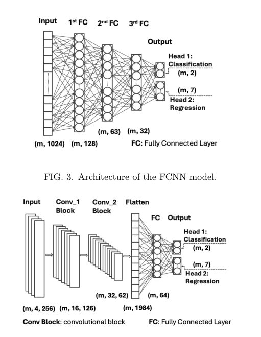
<figcaption class="paper-figure-caption"><b>Fig 4.</b> FIG. 4. Architecture of the CNN1D model.</figcaption>
</figure>
<figure class="paper-figure-card">
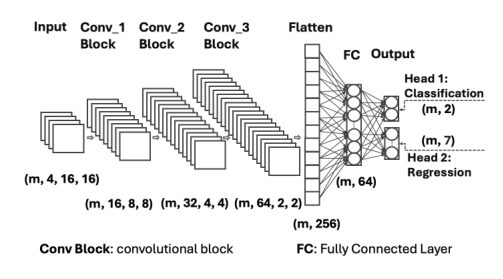
<figcaption class="paper-figure-caption"><b>Fig 5.</b> FIG. 5. Architecture of the CNN2D model.</figcaption>
</figure>
</div>

<p><strong>Summary.</strong> This paper tackles the difficult inverse problem of reconstructing a quantum magnet's Hamiltonian from neutron scattering data. By training neural networks on synthetic data generated from an exactly solvable honeycomb model, the authors show that ML provides a powerful, robust, and automated framework for quantitative Hamiltonian characterization. This offers a practical route for analyzing real-world quantum magnetic materials.</p>
<p><strong>Why it may be interesting.</strong> While the focus is on condensed matter magnetism, the methodology—using ML to invert complex physical measurements—is highly relevant to characterizing quantum materials where direct theoretical calculation is intractable.</p>
<details>
<summary>Detailed structure</summary>
<p><strong>Main problem.</strong> The central challenge is determining the microscopic Hamiltonian of a quantum magnet from inelastic neutron scattering (INS) measurements, which is a highly non-trivial inverse problem.</p>
<p><strong>Main result.</strong> The authors demonstrate that neural networks can efficiently solve this inverse problem, achieving high predictive accuracy even when input spectra are contaminated by significant random noise.</p>
<p><strong>Method.</strong> They train neural networks (FCNN, CNN1D, CNN2D) on a large synthetic dataset generated by a forward solver that computes the dynamical spin structure factor from known Hamiltonian parameters.</p>
<p><strong>Model / system.</strong> The study focuses on an eight-parameter family of isotropic Heisenberg spin models on a honeycomb lattice, analyzed in the fully polarized phase using linear spin-wave theory.</p>
<p><strong>Key observables.</strong> The dynamical spin structure factor, S(q, omega), which is the magnetic contribution to the neutron-scattering response.</p>
<p><strong>Important parameters / regimes.</strong> The eight exchange couplings $\{J_1, \dots, J_8\}$ that define the Hamiltonian.</p>
<p><strong>Assumptions / limitations.</strong> The method relies on the availability of an accurate and efficient forward solver to construct the necessary training database, and the initial benchmark uses an exactly solvable model.</p>
<p><strong>Figures summary.</strong> Figure 1 illustrates the workflow: Forward solver $
ightarrow$ Train NN $
ightarrow$ Deploy NN for inference. Figure 2(a) shows the honeycomb lattice structure and the bonds corresponding to the eight coupling constants.</p>
<p><strong>Paper structure.</strong> The paper establishes the inverse problem, details the forward calculation using spin-wave theory for the specific model, proposes using NNs to map spectra back to parameters, and validates the approach using synthetic data and noise robustness tests.</p>
</details>
<details>
<summary>Abstract</summary>
<p>Determining the microscopic Hamiltonian of a quantum magnet from inelastic neutron scattering measurements remains a central challenge in condensed matter physics. While the dynamical spin structure factor contains, in principle, sufficient information about the underlying interactions, extracting Hamiltonian parameters from experimental spectra constitutes a highly nontrivial inverse problem due to the large parameter space and the presence of experimental noise. Here we demonstrate that neural networks can efficiently solve this inverse problem for a broad class of quantum magnets. As a benchmark, we consider an eight-parameter family of honeycomb lattice Heisenberg spin models in the fully polarized phase, where the dynamical spin structure factor can be computed exactly within linear spin-wave theory. Using a large synthetic dataset of neutron scattering spectra, we train neural networks to infer the underlying Hamiltonian parameters directly from the dynamical response. We compare the performance of three different architectures---fully connected neural networks (FCNNs), one-dimensional convolutional neural networks (CNN1Ds), and two-dimensional convolutional neural networks (CNN2Ds)---and find that all achieve high predictive accuracy. Remarkably, the trained models remain robust in the presence of substantial experimental uncertainty, reliably recovering the Hamiltonian parameters even when the input spectra are contaminated by random noise with amplitudes reaching $10\%$ of the signal intensity. Our results establish machine learning as a powerful framework for quantitative Hamiltonian reconstruction from neutron scattering data and provide a practical route toward automated characterization of quantum magnetic materials.</p>
</details>
<p><sub><a href="#top">↑ back to top</a></sub></p>

<p><a id="paper-2609.24063"></a></p>
<h3 id="exact-nonperturbative-equilibrium-mode-statistics-in-nonlinear-wave-and-lattice-systems"><a href="http://arxiv.org/abs/2609.24063v1">Exact Nonperturbative Equilibrium Mode Statistics in Nonlinear Wave and Lattice Systems</a></h3>
<p><strong>Authors:</strong> Jialin Zhang, Yong Zhang, Hong Zhao<br>
<strong>Type:</strong> theory · <strong>Category:</strong> statistical mechanics · <strong>PDF:</strong> <a href="https://arxiv.org/pdf/2609.24063v1">https://arxiv.org/pdf/2609.24063v1</a><br>
<strong>Analysis basis:</strong> full PDF text, analyzed in chunks
<strong>Topic relevance:</strong> <code>Frenkel-Kontorova</code> <strong>1/5</strong> · <code>Keldysh / 2PI / non-Gaussian methods</code> <strong>1/5</strong> · <code>analog quantum simulation</code> <strong>1/5</strong></p>
<div class="figure-strip-hint">↔ Scroll figures horizontally</div>
<div class="paper-figures-scroll">
<figure class="paper-figure-card">
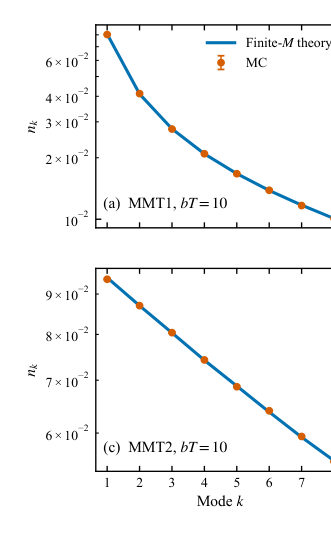
<figcaption class="paper-figure-caption"><b>Fig 1.</b> Figure 1: Nonperturbative equilibrium occupations of two branches of the finite- mode MMT family. Here and below, MMT1 and MMT2 denote branches I and II, respectively. Panels (a,b) show the purely quartic branch and panels (c,d) the mixed cubic-quartic branch for M = 8, T = 1, and bT = 10 or 100. Solid curves are the complete finite-M nonperturbative predictions; symbols are independent Metropolis MC simulations of the original Hamiltonian, with replica standard errors.</figcaption>
</figure>
<figure class="paper-figure-card">
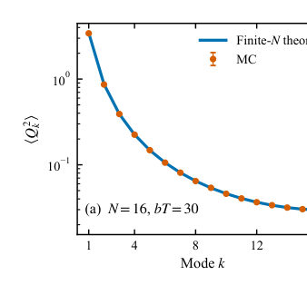
<figcaption class="paper-figure-caption"><b>Fig 2.</b> Figure 2: Finite-size nonperturbative spectrum of the fixed-boundary FPUT-β chain for N = 16, T = 1, and bT = 30 or 70. Solid curves are the exact finite- N constrained-bond predictions, and symbols are independent MC data in the original displacement variables, with replica standard errors.</figcaption>
</figure>
<figure class="paper-figure-card">
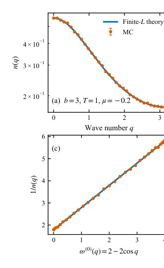
<figcaption class="paper-figure-caption"><b>Fig 3.</b> Figure 3: DNLS occupations in the normal regime for T = 1, µ = −0.2, L = 256, and b = 3 or 20. The upper panels show n(q) against wave number. The lower panels show 1/n(q) against the bare lattice frequency. Solid curves are the exact finite-ring nonperturbative predictions, and symbols are independent MC data with replica standard errors.</figcaption>
</figure>
<figure class="paper-figure-card">
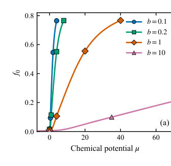
<figcaption class="paper-figure-caption"><b>Fig 4.</b> Figure 4: Finite-size DNLS quasicondensation at T = 1 and L = 256. (a) Zero- mode fraction f0 = n0/ P k nk versus chemical potential for b = 0.1, 0.2, 1, and 10. (b) The same data plotted against µ/b. Solid curves are the exact finite-ring transfer-operator predictions and symbols are independent MC results.</figcaption>
</figure>
<figure class="paper-figure-card">
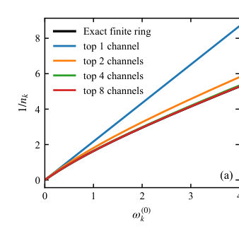
<figcaption class="paper-figure-caption"><b>Fig 5.</b> Figure 5: Cumulative-channel reconstruction of the exact finite-ring DNLS in- verse spectrum at T = 1, L = 256, and b = 0.1, plotted against ω(0) k = 2 −2 cos qk. Channels are ranked by decreasing Θ(L) c . The black curve is the exact sum over all retained channels; colored curves are the inverses of the cu- mulative occupations from the leading 1, 2, 4, and 8 channels. (a) µ = 2. (b) µ = 10. Successive cumulative sums reconstruct the complete occupation. Their different slopes mainly show the spectral weight added by successive channels; the weaker curvature of the full inverse spectrum is quantified by Eq. (75).</figcaption>
</figure>
</div>

<p><strong>Summary.</strong> This work establishes exact, nonperturbative equilibrium theories for modal statistics in nonlinear wave and lattice systems like DNLS and MMT. It rigorously proves that simple perturbative expansions fail under strong coupling or near quasicondensation. The findings provide a necessary quantitative basis for accurately describing energy and particle distributions in complex nonlinear physical systems.</p>
<p><strong>Why it may be interesting.</strong> The rigorous demonstration of when and why simple approximations fail in nonlinear systems provides a crucial theoretical benchmark for modeling energy transport and coherence in nonlinear optics and lattice dynamics.</p>
<details>
<summary>Detailed structure</summary>
<p><strong>Main problem.</strong> The paper aims to derive exact, nonperturbative representations for the equilibrium modal occupations and related statistics in various nonlinear wave and lattice systems.</p>
<p><strong>Main result.</strong> Nonperturbative theory is crucial because standard perturbative methods fail near strong nonlinearity or in regimes like quasicondensation, where low-mode occupations amplify interaction effects.</p>
<p><strong>Method.</strong> The authors use the full Gibbs weight formalism to calculate thermal averages, comparing these exact results against various low-order perturbative expansions.</p>
<p><strong>Model / system.</strong> The study analyzes three representative nonlinear systems: the Majda-McLaughlin-Tabak (MMT) dispersive-wave model, the Fermi-Pasta-Ulam-Tsingou ($eta$) anharmonic chain, and the Discrete Nonlinear Schrödinger (DNLS) lattice field.</p>
<p><strong>Key observables.</strong> Equilibrium modal occupations ($\langle|a_k|^2
angle$), mean modal frequencies, and the distribution of energy, particles, and optical power among modes.</p>
<p><strong>Important parameters / regimes.</strong> The analysis covers regimes from weak to strong nonlinearity, with special focus on the quasicondensation crossover in the DNLS model.</p>
<p><strong>Assumptions / limitations.</strong> The core assumption is that the full Gibbs weight calculation yields the exact nonperturbative result, contrasting with the limitations of low-order approximations.</p>
<p><strong>Figures summary.</strong> Figures compare finite-N theory against Metropolis MC simulations for MMT occupations, and show the failure of Hartree/Rayleigh-Jeans relations near quasicondensation.</p>
<p><strong>Paper structure.</strong> The paper systematically derives exact formulas for modal statistics in MMT and FPUT, then applies the framework to DNLS, culminating in a detailed comparison demonstrating the failure of perturbative methods at higher orders.</p>
</details>
<details>
<summary>Abstract</summary>
<p>We derive exact finite-size nonperturbative representations of equilibrium modal occupations and related statistics for three representative nonlinear systems: the Majda-McLaughlin-Tabak dispersive-wave model, the Fermi-Pasta-Ulam-Tsingou beta anharmonic chain, and the discrete nonlinear Schrodinger lattice field. Independent simulations confirm the predictions from weak to strong nonlinearity. For DNLS, the theory remains accurate across the weak-coupling quasicondensation crossover, where large low-mode occupations and long-range coherence amplify interaction effects even when the bare nonlinear coefficient is small. The finite-ring DNLS occupations are further resolved into a positive sum of Rayleigh-Jeans channels with distinct correlation lengths, explaining when a single Rayleigh-Jeans law applies and why it fails near quasicondensation. In MMT and DNLS, the exact occupations also determine the mean modal frequencies even when the dynamical spectra broaden or split. The nonperturbative results allow a direct assessment of two representative perturbative approaches. Treating the mean interaction appropriately yields accurate low-order approximations, including at strong nonlinearity. At higher orders, however, the corrections cease to decrease and successive approximations oscillate with increasing amplitude; both finite-order approaches also fail near weak-coupling quasicondensation. Thus neither low-order agreement nor a small bare coupling guarantees a reliable perturbative description. The results establish nonperturbative equilibrium theory for widely used nonlinear wave and lattice models and provide a quantitative basis for modal distributions of energy, particles, and optical power in nonlinear optics, dispersive waves, anharmonic lattices, and cold-atom systems.</p>
</details>
<p><sub><a href="#top">↑ back to top</a></sub></p>

<p><a id="paper-2609.24100"></a></p>
<h3 id="polar-vibrational-excitations-and-glass-like-response-in-relaxor-pmn"><a href="http://arxiv.org/abs/2609.24100v1">Polar vibrational excitations and glass-like response in relaxor PMN</a></h3>
<p><strong>Authors:</strong> Kehan Cai, Pinchen Xie, Yifan Li, Roberto Car<br>
<strong>Type:</strong> both · <strong>Category:</strong> disordered systems and neural networks · <strong>PDF:</strong> <a href="https://arxiv.org/pdf/2609.24100v1">https://arxiv.org/pdf/2609.24100v1</a><br>
<strong>Analysis basis:</strong> full PDF text, analyzed in chunks
<strong>Topic relevance:</strong> <code>Frenkel-Kontorova</code> <strong>1/5</strong> · <code>driven-dissipative phase transition</code> <strong>1/5</strong> · <code>scars &amp; prethermalization</code> <strong>1/5</strong></p>
<div class="figure-strip-hint">↔ Scroll figures horizontally</div>
<div class="paper-figures-scroll">
<figure class="paper-figure-card">
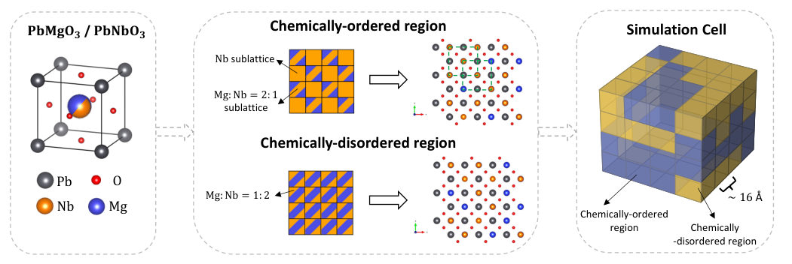
<figcaption class="paper-figure-caption"><b>Fig 1.</b> FIG. 1. Schematic representation of the chemically-ordered regions and chemically-disordered regions. They are building blocks of the supercells adopted in MD simulations.</figcaption>
</figure>
<figure class="paper-figure-card">
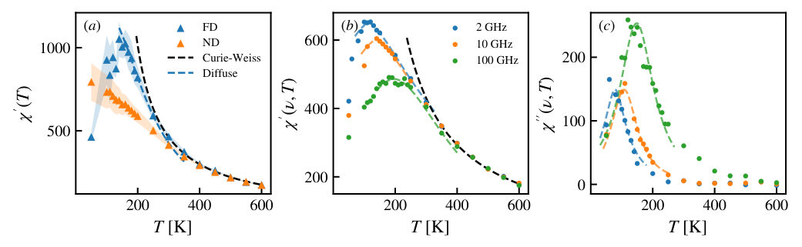
<figcaption class="paper-figure-caption"><b>Fig 2.</b> FIG. 2. (a) χ′ FD and χ′ ND as functions of temperature. The shaded regions indicate the standard deviation with respect to disorder realizations. The black and blue dashed lines are fits to the Curie-Weiss and diffuse transition laws, respectively. (b) χ′(ν, T). The black dashed line is a fit to the Curie-Weiss law. The colored dashed lines are fits to the diffuse transition law. (c) χ′′(ν, T). The colored dashed lines are guides for the eyes.</figcaption>
</figure>
<figure class="paper-figure-card">
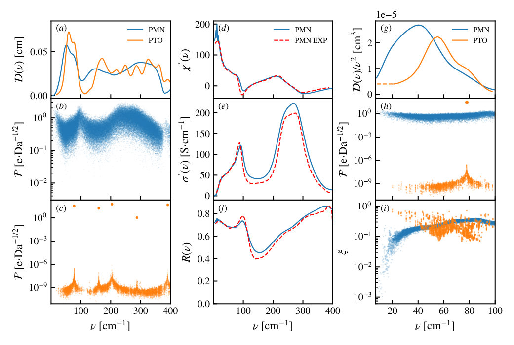
<figcaption class="paper-figure-caption"><b>Fig 3.</b> FIG. 3. (a) VDOS of PMN and PTO. (b) Frequency-dependent oscillator strength of vibrational modes in PMN. (c) Frequency- dependent oscillator strength of vibrational modes in PTO. Data points with F &gt; 0.1 e · Da−1/2 are displayed using larger markers. (d) Real part of the dielectric susceptibility of PMN; the noisy character of the calculated χ′(ν) at very low frequencies is attributed to the poor statistics of the calculated modes at these frequencies. (e) Real part of the optical conductivity of PMN. (f) Reflectivity of PMN. The calculated spectra in (d), (e) and (f) are compared with the experimental data measured at T = 10 K (red) [33]. (g) Reduced VDOS in the low-frequency regime. (h)...</figcaption>
</figure>
<figure class="paper-figure-card">
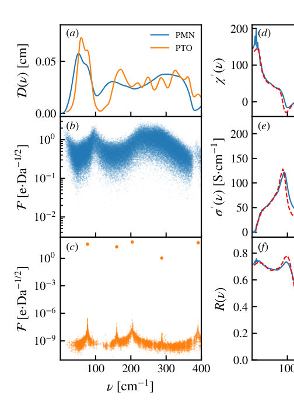
<figcaption class="paper-figure-caption"><b>Fig 4.</b> Fig. 3(a) shows the VDOS per primitive cell, denoted by D(ν). For PMN, the VDOS has a negligible spread among the disorder realizations. This suggests minor fi- nite size effects, and in particular, the VDOS depends mostly on the gross features of the compositional disor- der. Accordingly, Fig. 3(a) reports the VDOS of PMN as an average over the four inherent structures.</figcaption>
</figure>
<figure class="paper-figure-card">
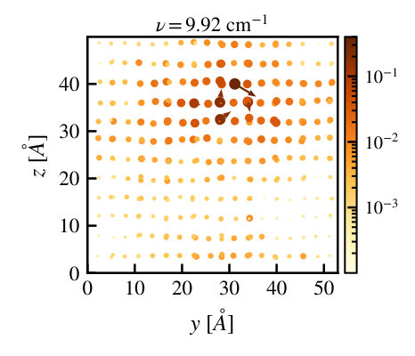
<figcaption class="paper-figure-caption"><b>Fig 5.</b> FIG. 4. A representative localized eigenmode (ν = 9.92 cm−1) from an arbitrary inherent structure of PMN. Pb atoms within a thin layer parallel to the yz plane are extracted from the simulation cell and displayed at their (y, z) coordinates. The color and size of each circle encode the magnitude of the normalized eigenvector amplitude. Arrows indicate the direc- tion and magnitude of its in-plane components; for clarity, arrows are shown only for sites with a large amplitude.</figcaption>
</figure>
</div>

<p><strong>Summary.</strong> This paper uses advanced atomistic simulations with machine-learned potentials to study the relaxor ferroelectric PMN. It demonstrates that the material's glass-like behavior, characterized by anomalous dielectric and thermal responses, originates from a continuum of disorder-induced polar vibrational excitations. These findings provide a unified picture connecting the material's structural disorder to its complex low-frequency optical and thermal properties.</p>
<p><strong>Why it may be interesting.</strong> The work provides a detailed, atomistic link between structural disorder (a key feature in many complex quantum materials) and emergent glassy dynamics, which is highly relevant for understanding phase transitions in disordered quantum systems.</p>
<details>
<summary>Detailed structure</summary>
<p><strong>Main problem.</strong> The study investigates the microscopic origins of the glass-like dielectric and thermal responses observed in relaxor ferroelectrics.</p>
<p><strong>Main result.</strong> The research successfully connects the dielectric, optical, and thermal anomalies of PMN through the analysis of disorder-induced polar vibrational excitations, specifically identifying quasi-localized excitations (QLE).</p>
<p><strong>Method.</strong> The authors employed atomistic simulations using machine-learned potentials (Deep Potential/Deep Wannier) trained on first-principles DFT data.</p>
<p><strong>Model / system.</strong> The system is the relaxor ferroelectric $   ext{Pb}(    ext{Mg}<em 2_3="2/3">{1/3}   ext{Nb}</em>_3$ (PMN), modeled as a random mixture of chemically ordered and disordered regions. The analysis focuses on the coupling between elastic motion and electric polarization.})  ext{O</p>
<p><strong>Key observables.</strong> Low-frequency susceptibility ($\chi'$), far-infrared spectra, vibrational density of states (VDOS) showing a boson peak, and the Edwards-Anderson (EA) order parameter ($q$).</p>
<p><strong>Important parameters / regimes.</strong> Low frequencies ($
u &lt; 20  ext{ cm}^{-1}$), temperatures near the diffuse transition, and the degree of compositional disorder.</p>
<p><strong>Assumptions / limitations.</strong> The model assumes the polarization change during MD remains within one polarization quantum, and the local dipole moment calculation uses specific weight factors for different atom types.</p>
<p><strong>Figures summary.</strong> Figures illustrate the schematic building blocks of the supercells, the temperature dependence of susceptibilities ($\chi'_{	ext{FD}}$ vs. $\chi'_{	ext{ND}}$), and the visualization/statistics of the excess low-frequency quasi-localized excitations (QLE) in PMN.</p>
<p><strong>Paper structure.</strong> The paper progresses by first establishing the theoretical framework using machine-learned potentials, then simulating the temperature dependence of polarization responses ($\chi'$), and finally analyzing the vibrational spectrum to pinpoint the excess low-frequency modes responsible for the glass-like behavior.</p>
</details>
<details>
<summary>Abstract</summary>
<p>Relaxor ferroelectrics retain crystalline order while exhibiting glass-like dielectric and thermal responses. Using atomistic models trained on first-principles data, we investigate these responses in the prototypical relaxor Pb(Mg_{1/3}Nb_{2/3})O_3 (PMN). Compositional disorder couples elastic motion to electric polarization, producing a continuum of polar vibrational excitations, unlike the discrete polar optical modes of conventional ferroelectric PbTiO_3. The simulations qualitatively reproduce the temperature dependence of the low-frequency susceptibility, while the calculated far-infrared spectra agree closely with experiments. At low frequencies, disorder in PMN generates a boson peak comprising excess phonon-like modes and quasi-localized excitations. The latter exhibit a quartic frequency dependence of their density of states and pronounced anharmonicity, as in structural glasses. These excess modes account for PMN's anomalous behavior in the specific heat for temperature higher than 5 K. These results connect the dielectric, optical, and thermal anomalies of a crystalline relaxor through its disorder-induced polar excitation spectrum.</p>
</details>
<p><sub><a href="#top">↑ back to top</a></sub></p>

<p><a id="paper-2609.24508"></a></p>
<h3 id="statistical-mechanics-of-multipartite-entanglement-in-hypergraph-states"><a href="http://arxiv.org/abs/2609.24508v1">Statistical mechanics of multipartite entanglement in hypergraph states</a></h3>
<p><strong>Authors:</strong> Paolo Scarafile, Giorgia Trotta, Paolo Facchi, Giuseppe Magnifico, Giorgio Parisi, Saverio Pascazio, Karol Życzkowski<br>
<strong>Type:</strong> theory · <strong>Category:</strong> statistical mechanics · <strong>PDF:</strong> <a href="https://arxiv.org/pdf/2609.24508v1">https://arxiv.org/pdf/2609.24508v1</a><br>
<strong>Analysis basis:</strong> full PDF text, analyzed in chunks
<strong>Topic relevance:</strong> <code>Keldysh / 2PI / non-Gaussian methods</code> <strong>1/5</strong> · <code>analog quantum simulation</code> <strong>1/5</strong> · <code>methods for driven-dissipative</code> <strong>1/5</strong></p>
<div class="figure-strip-hint">↔ Scroll figures horizontally</div>
<div class="paper-figures-scroll">
<figure class="paper-figure-card">
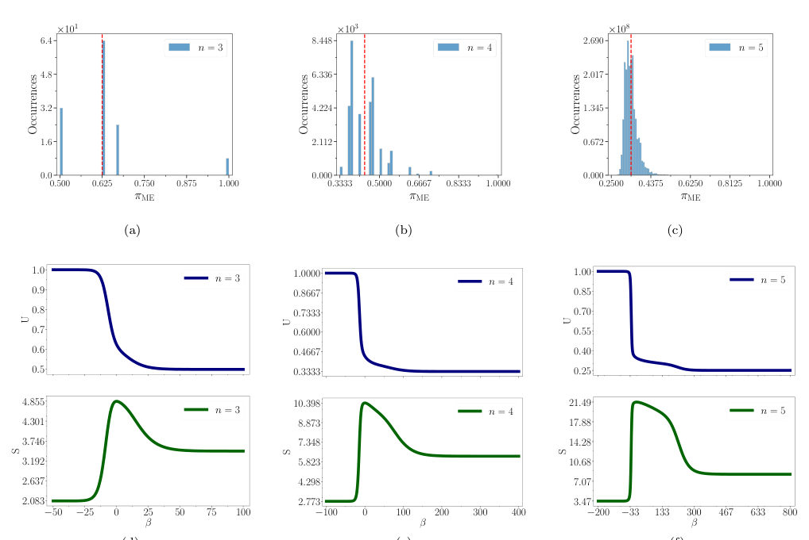
<figcaption class="paper-figure-caption"><b>Fig 1.</b> FIG. 1: Exact results for the hypergraph state sets of 3, 4, and 5 qubits. Top: distribution of multipartite entanglement πME, equivalent to the distribution of all microstates at β = 0: (a) 3-qubit distribution, (b) 4-qubit distribution, (c) 5-qubit distribution. Bottom: internal energy and entropy as a function of inverse temperature β: (d) 3 qubits, β ∈[−50, 100]; (e) 4 qubits, β ∈[−100, 400]; (f) 5 qubits, β ∈[−200, 800].</figcaption>
</figure>
<figure class="paper-figure-card">
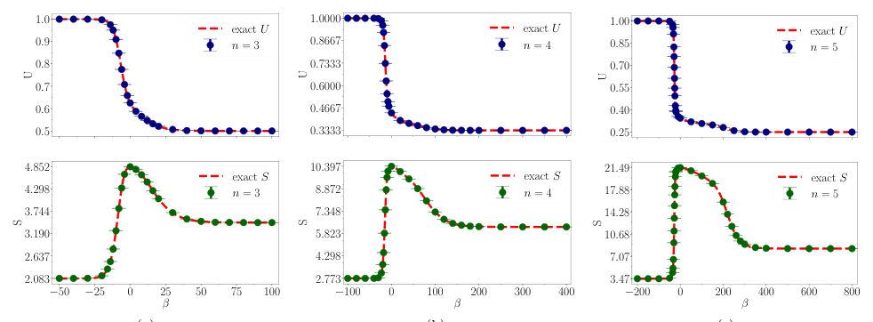
<figcaption class="paper-figure-caption"><b>Fig 2.</b> FIG. 2: Comparison between the simulated internal energy and entropy (points with error bars) and those exactly computed in Sec. III. (a) 3-qubit, (b) 4-qubit, (c) 5-qubit. The dashed curves are those shown in Fig. 1.</figcaption>
</figure>
<figure class="paper-figure-card">
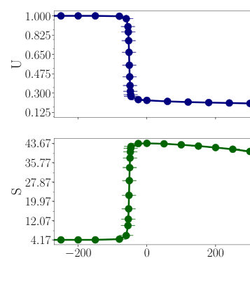
<figcaption class="paper-figure-caption"><b>Fig 3.</b> FIG. 3: Internal energy (top) and entropy (bottom) for 6 qubits.</figcaption>
</figure>
<figure class="paper-figure-card">
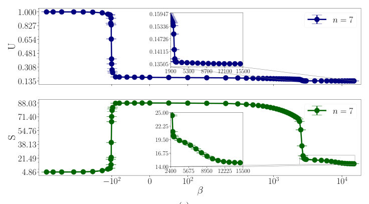
<figcaption class="paper-figure-caption"><b>Fig 4.</b> FIG. 4: Internal energy (top) and entropy (bottom) for 7 qubits. The thermodynamic functions have been plotted using a log-scale on the β−axis for making evident the behavior in the negative β region.</figcaption>
</figure>
<figure class="paper-figure-card">
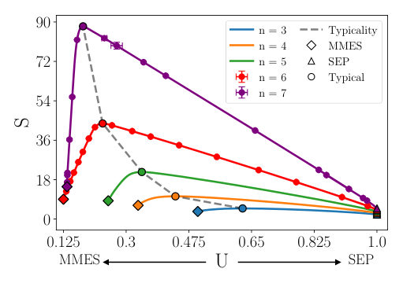
<figcaption class="paper-figure-caption"><b>Fig 5.</b> FIG. 5: Entropy S as a function of the internal energy U (average purity) for different number of qubits. For n = 3, 4, and 5 qubits, the results are obtained from the complete enumeration over the hypergraph sets. For n = 6 and 7 qubits, all data points are generated us- ing the numerical protocol based on annealing. The diamond-labeled MMES identifies the points along the curves corresponding to maximal multipartite entangled state configurations, the triangle-labeled SEP denote the points associated with separable configurations, while the circle-labeled “Typical” indicates the points where typical states are reached. The dashed line connecting the points corresponding to typical states...</figcaption>
</figure>
</div>

<p><strong>Summary.</strong> This work develops a statistical mechanics framework to analyze multipartite entanglement in hypergraph states by mapping the entanglement measure onto a classical spin Hamiltonian. By treating temperature as a control parameter, the authors can calculate key quantities like the number of maximally entangled states. This approach provides both theoretical insight and computational tools for studying entanglement in complex quantum systems.</p>
<p><strong>Why it may be interesting.</strong> It provides a powerful, generalizable thermodynamic lens to study complex quantum phenomena like multipartite entanglement, connecting quantum information theory directly to established tools in statistical mechanics.</p>
<details>
<summary>Detailed structure</summary>
<p><strong>Main problem.</strong> The paper investigates the statistical mechanics of multipartite entanglement within a specific family of quantum states known as hypergraph states.</p>
<p><strong>Main result.</strong> The framework successfully maps the quantum entanglement problem onto a classical statistical mechanics problem, allowing the zero-temperature entropy to directly yield the number of Maximally Multipartite Entangled States (MMES).</p>
<p><strong>Method.</strong> The analysis uses the canonical ensemble approach, defining a partition function based on the average bipartite purity, and employs advanced simulation techniques like Simulated Annealing and Parallel Tempering for large systems.</p>
<p><strong>Model / system.</strong> The system under study is pure n-qubit hypergraph states. The entanglement measure, the average bipartite purity ($\pi_{ME}$), is mapped onto an effective classical Hamiltonian defined over $2^n$ binary spins, involving four-body interactions.</p>
<p><strong>Key observables.</strong> Average bipartite purity ($\pi_{ME}$), Zero-Temperature Entropy ($S(T=0)$), Internal Energy ($U(eta)$), and the number of MMES.</p>
<p><strong>Important parameters / regimes.</strong> Temperature ($T$) or inverse temperature ($eta$), which acts as a control parameter interpolating between random and maximally entangled states.</p>
<p><strong>Assumptions / limitations.</strong> For large systems ($n \ge 6$), the use of SA and PT algorithms is necessary due to the exponential size of the state space, meaning results are approximations.</p>
<p><strong>Figures summary.</strong> Figures illustrate the distribution of $\pi_{ME}$ and the evolution of thermodynamic observables like $U(eta)$ and $S(eta)$ as the temperature/inverse temperature is varied.</p>
<p><strong>Paper structure.</strong> The paper establishes the mapping from quantum entanglement to a classical Hamiltonian, defines the thermodynamic observables using the partition function, and then applies exact enumeration for small systems, transitioning to advanced simulation techniques for larger, intractable systems.</p>
</details>
<details>
<summary>Abstract</summary>
<p>We investigate multipartite entanglement in a particular family of pure $n$-qubit hypergraph states through a statistical-mechanics framework, where the average bipartite purity maps onto an effective Hamiltonian of $2^n$ classical binary spins. In this correspondence, each hypergraph state uniquely corresponds to a classical spin configuration, while temperature serves as a control parameter that continuously interpolates between a uniform ensemble of random hypergraph states at high temperature and maximally multipartite entangled states (MMES) at zero temperature. Remarkably, the exponential of the zero-temperature entropy directly gives the number of MMES within the set of hypergraph states. For small system sizes ($n \leq 5$), we perform an exact enumeration, fully characterizing the energy landscape and associated thermodynamic observables, and validating known MMES counts. For larger systems ($n = 6$ and $7$), where exact methods become computationally infeasible, we employ simulated annealing and parallel tempering algorithms to efficiently sample the exponentially large state space. Our analysis yields quantitative predictions of the number of MMES and reveals how entanglement is statistically distributed across the sets of hypergraph states. These results establish hypergraph states as an ideal platform for investigating multipartite entanglement through thermodynamic methods, offering both computational advances and physical insights into the structure of quantum entanglement in restricted families of quantum states.</p>
</details>
<p><sub><a href="#top">↑ back to top</a></sub></p>

<p><a id="paper-2609.23050"></a></p>
<h3 id="a-coherent-memory-register-for-sequential-quantum-generative-modeling-with-application-to-calorimeter-showers"><a href="http://arxiv.org/abs/2609.23050v1">A Coherent Memory Register for Sequential Quantum Generative Modeling, with Application to Calorimeter Showers</a></h3>
<p><strong>Authors:</strong> Jamal Slim. Saverio Monaco, Ran Xue, Dirk Kruecker, Kerstin Borras<br>
<strong>Type:</strong> both · <strong>Category:</strong> quantum information and computing · <strong>PDF:</strong> <a href="https://arxiv.org/pdf/2609.23050v1">https://arxiv.org/pdf/2609.23050v1</a><br>
<strong>Analysis basis:</strong> full PDF text, analyzed in chunks
<strong>Topic relevance:</strong> <code>analog quantum simulation</code> <strong>1/5</strong> · <code>quantum measurements</code> <strong>1/5</strong></p>
<div class="figure-strip-hint">↔ Scroll figures horizontally</div>
<div class="paper-figures-scroll">
<figure class="paper-figure-card">
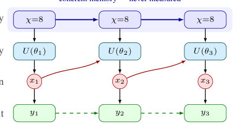
<figcaption class="paper-figure-caption"><b>Fig 1.</b> FIG. 1: CoMB as a sequential Born machine. A coherent memory register (χ=2nm=8, blue) persists across blocks and is never measured mid-chain, carrying the inter-block correlation, the block unitary U(θβ, aβ) (light blue) acts jointly on the memory and work registers, and the work register is then measured, emitting the token xβ (red), and reset. A causal emission (green) renders tokens to pixels and stitches the block boundary (dashed). The register size is fixed by the block, nq = nm+nw = 6, independent of d. Adding pixels adds blocks (B = ⌈d/b⌉), not qubits.</figcaption>
</figure>
<figure class="paper-figure-card">
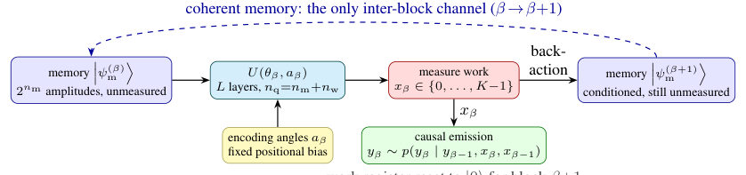
<figcaption class="paper-figure-caption"><b>Fig 2.</b> FIG. 2: Dataflow of one autoregressive step. The memory register (blue) enters block β carrying the quantum summary of the prefix as 2nm amplitudes, the block unitary (light blue) entangles it with the freshly reset work register under fixed positional encoding angles (yellow); measuring the work register (red) emits the token xβ, which the causal emission (green) expands to pixels (Sec. III D), while its back-action conditions the memory, which proceeds unmeasured to block β+1 (dashed loop). The memory is the only inter-block channel. Every cross-block correlation is transported by unmeasured qubits. The register is reused each block, so nq = nm+nw = 6 regardless of d.</figcaption>
</figure>
<figure class="paper-figure-card">
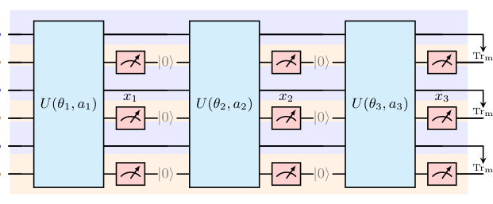
<figcaption class="paper-figure-caption"><b>Fig 3.</b> FIG. 3: Wire-level rollout (B=3 blocks shown, interleaved order [m0, w0, m1, w1, m2, w2]). Color encodes the two registers throughout the paper. The memory register (blue) runs unbroken through every block boundary, no meter ever touches it, so the χ=2nm-dimensional conditional state crosses coherently, while the work register (orange) is interrupted at every boundary by a measurement (red) whose outcome is the block token xβ, followed by a reset (gray) to |0⟩. Each block unitary (light blue) reuses the same circuit shape with its own parameters θβ and positional angles aβ. At the end of the chain the memory is discarded, not read out (Trm). Once the last token is recorded, tracing the...</figcaption>
</figure>
<figure class="paper-figure-card">
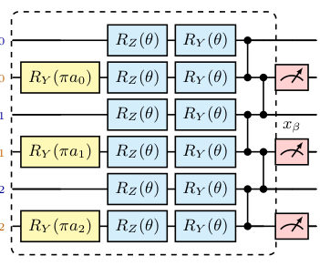
<figcaption class="paper-figure-caption"><b>Fig 4.</b> FIG. 4: Anatomy of one block unitary U(θβ, aβ) (nm=nw=3, hardware-native entangler), i.e. the interior of one light-blue box of Fig. 3. Per layer: encoding gates (yellow) RY (πak) upload the fixed per-block positional biases aβ = σ(posβ) onto the work qubits (no event data is uploaded); variational gates (light blue) RZ(θ)RY (θ) act on all six qubits and carry the entire learned distribution, the CZ line over the interleaved order couples the registers. Every CZ is nearest-neighbor and memory↔work, partitioning into two parallel sub-layers (depth 2) with zero routing SWAPs on heavy-hex. After L layers the work register is measured (red), emitting the token xβ, and reset (gray), the memory...</figcaption>
</figure>
<figure class="paper-figure-card">
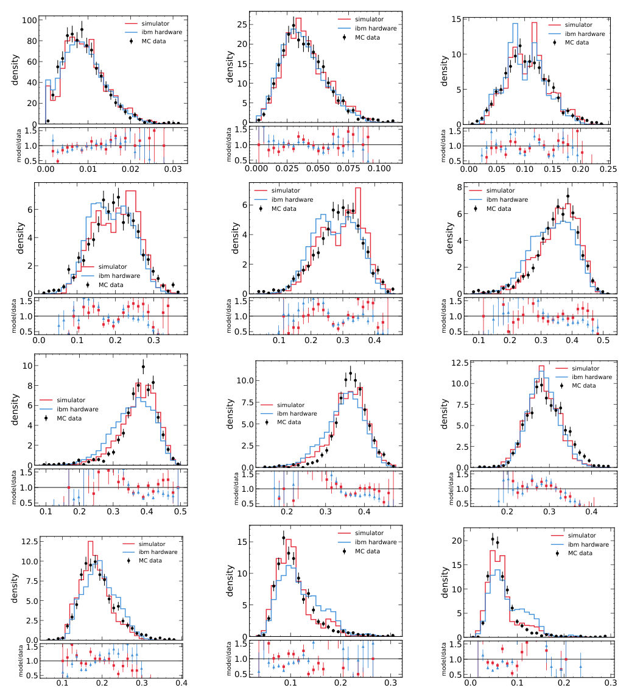
<figcaption class="paper-figure-caption"><b>Fig 5.</b> FIG. 5: Per-cell intensity marginals (cells 0–11): MC data (black points), simulator CoMB (red), and ibm kingston CoMB (blue) on common axes, with model/data ratio panels for both paths (red squares for the simulator, blue triangles for the device). Peak position and width shift systematically through the four blocks, both paths track them, with the device visibly broader in the later blocks, consistent with the accumulating decoherence quantified in Table III.</figcaption>
</figure>
</div>

<p><strong>Summary.</strong> This paper introduces the Coherent-Memory Born Machine (CoMB), a quantum generative model designed to simulate complex particle shower data in calorimeters. By using a fixed, coherent quantum memory register, CoMB overcomes the scaling limitations of previous quantum approaches. It successfully reproduces crucial physical observables, such as inter-block correlations, demonstrating the necessity of quantum coherence for accurate simulation.</p>
<p><strong>Why it may be interesting.</strong> The concept of using a fixed-size quantum memory to encode long-range correlations, independent of the system size, is highly relevant to simulating complex, large-scale quantum many-body dynamics or open quantum systems where state space grows exponentially.</p>
<details>
<summary>Detailed structure</summary>
<p><strong>Main problem.</strong> The primary challenge is developing fast, quantum-enhanced generative surrogates to simulate the computationally expensive process of particle showers in calorimeters.</p>
<p><strong>Main result.</strong> The proposed Coherent-Memory Born Machine (CoMB) successfully reproduces complex correlation structures in calorimeter data by utilizing a fixed-size quantum memory register to carry inter-block correlations.</p>
<p><strong>Method.</strong> The model employs a sequential Born machine structure, generating data block-by-block using a fixed quantum register split into a memory and a work register, avoiding scaling the register size with the image dimension.</p>
<p><strong>Model / system.</strong> The system is the simulation of particle showers in calorimeters, modeled by the CoMB, which is a quantum circuit whose measurement statistics define the generated probability distribution. It uses a fixed 6-qubit register to maintain quantum correlations across sequential blocks.</p>
<p><strong>Key observables.</strong> Energy distribution, correlation matrix between cells, total-energy spectrum, and per-cell Wasserstein distance ($W_1$).</p>
<p><strong>Important parameters / regimes.</strong> Fixed register size ($n_q=6$ qubits), block size, and the memory coherence ($\chi$).</p>
<p><strong>Assumptions / limitations.</strong> The model assumes that inter-block correlations can be faithfully encoded and maintained by the unmeasured quantum memory qubits throughout the sequential generation process.</p>
<p><strong>Figures summary.</strong> Figures illustrate the CoMB dataflow, showing the memory register running unbroken across block boundaries, while the work register is measured and reset per step. Correlation matrices compare MC data against the model's predictions.</p>
<p><strong>Paper structure.</strong> The paper introduces the computational bottleneck (calorimeter simulation), proposes the CoMB architecture (memory/work registers), details the training loss and quantum process, and validates the model by comparing its predictions against key observables like correlation matrices and total energy spectra.</p>
</details>
<details>
<summary>Abstract</summary>
<p>Simulating the showers that particles deposit in a calorimeter, the detector that records their energy across many cells, is one of the largest computing costs in high-energy physics, and fast generative surrogates are needed. Quantum circuits have been proposed as such surrogates, but demonstrations on calorimeter data have either required a register that grows with the image, roughly one qubit per cell, or have passed the information between parts of the image through a classical channel. We remove both constraints for this problem, using a construction drawn from the sequential-generation and hidden-quantum-Markov-model literature. A shower image is generated block by block on a fixed register of six qubits. Three of them, the memory, are never measured. They hold what the circuit knows about the blocks already generated as a quantum state, so the correlations between distant parts of the image cross each block boundary as unmeasured amplitudes. The other three are measured and reset once per block, and each outcome selects the energy pattern of one block. The register size is set by the block, so adding cells to the image adds steps to the sequence, not qubits. We call the model a coherent-memory Born machine (CoMB), a Born machine being a circuit whose measurement statistics are the generated distribution. Its training loss grows only linearly with the number of blocks and never requires enumerating the image distribution, and a depth-two instance runs on an IBM superconducting processor. On a twelve-cell benchmark the model reproduces the energy distribution of every cell, the correlation matrix between cells, and the total-energy spectrum. Removing the three memory qubits, with everything else unchanged, produces independent blocks. Every correlation between blocks is carried by the unmeasured qubits and by nothing else.</p>
</details>
<p><sub><a href="#top">↑ back to top</a></sub></p>

<p><a id="paper-2609.23180"></a></p>
<h3 id="adaptive-differential-evolution-and-multistart-search-for-noisy-qaoa-optimization"><a href="http://arxiv.org/abs/2609.23180v1">Adaptive Differential Evolution and Multistart Search for Noisy QAOA Optimization</a></h3>
<p><strong>Authors:</strong> Vojtěch Novák, Ivan Zelinka, Swagatam Das, Martin Beseda<br>
<strong>Type:</strong> theory · <strong>Category:</strong> disordered systems and neural networks · <strong>PDF:</strong> <a href="https://arxiv.org/pdf/2609.23180v1">https://arxiv.org/pdf/2609.23180v1</a><br>
<strong>Analysis basis:</strong> full PDF text, analyzed in chunks
<strong>Topic relevance:</strong> <code>analog quantum simulation</code> <strong>1/5</strong> · <code>quantum measurements</code> <strong>1/5</strong></p>
<div class="figure-strip-hint">↔ Scroll figures horizontally</div>
<div class="paper-figures-scroll">
<figure class="paper-figure-card">

<figcaption class="paper-figure-caption"><b>Fig 1.</b> Figure 1: Shared-QAOA landscape characterization. Top row: size dependence at fixed depth p = 3. Bottom row: depth dependence of quench-level multiplicity, random-point gradient scale, and active Hessian condition number. Line styles and markers distinguish the four Hamiltonian families.</figcaption>
</figure>
<figure class="paper-figure-card">

<figcaption class="paper-figure-caption"><b>Fig 2.</b> Figure 2: Median best-so-far normalized optimization error over 25 runs at 30 000 FEs. The visual floor is 10−7; values below this threshold are not visually resolved. Horizontal reference levels indicate the 10−3 and 10−6 accuracy targets.</figcaption>
</figure>
<figure class="paper-figure-card">

<figcaption class="paper-figure-caption"><b>Fig 3.</b> Figure 3: Probability of reaching normalized optimization-error targets as a function of FE count at the 30 000-FE budget. Top row: εopt ≤10−3; bottom row: εopt ≤10−6. Probabilities are computed from the unclipped numerical errors.</figcaption>
</figure>
<figure class="paper-figure-card">

<figcaption class="paper-figure-caption"><b>Fig 4.</b> Figure 4: Low-noise optimizer convergence at 30 000 FEs. Curves show the median exact error of the best point visited, evaluated offline; the optimizer receives only noisy values. Values below 10−4 are visually clipped.</figcaption>
</figure>
<figure class="paper-figure-card">

<figcaption class="paper-figure-caption"><b>Fig 5.</b> Figure 5: High-noise search convergence at 30 000 FEs. Curves show the median exact error of the best point visited; the optimizer receives only noisy values.</figcaption>
</figure>
</div>

<p><strong>Summary.</strong> This work rigorously benchmarks classical optimization algorithms for minimizing QAOA cost functions derived from various spin glass models. By testing performance under both exact and noisy objective functions, the authors demonstrate that the best optimization strategy is highly conditional on the noise level and the specific metric used for evaluation. The findings provide crucial guidance for implementing VQAs on near-term quantum hardware.</p>
<p><strong>Why it may be interesting.</strong> It directly addresses the practical challenges of optimizing variational quantum algorithms (VQAs) in realistic, noisy quantum computing environments, which is highly relevant for understanding noise mitigation in quantum simulation.</p>
<details>
<summary>Detailed structure</summary>
<p><strong>Main problem.</strong> The paper benchmarks classical optimization strategies for finding the ground state of a fixed, low-depth Quantum Approximate Optimization Algorithm (QAOA) ansatz.</p>
<p><strong>Main result.</strong> The optimal choice of optimizer depends jointly on the landscape structure, the level of observation noise, and whether the performance metric is based on the best point visited or the point selected from noisy measurements.</p>
<p><strong>Method.</strong> A comparative study evaluating ten different classical optimizers (including adaptive Differential Evolution variants) across four families of cost-Hamiltonians under both exact and noisy objective functions.</p>
<p><strong>Model / system.</strong> The system is modeled using the QAOA ansatz applied to various spin glass Hamiltonians, including Max-Cut, Edwards–Anderson (EA), Diluted three-spin glass, and Sherrington–Kirkpatrick (SK) models.</p>
<p><strong>Key observables.</strong> Optimization error ($\epsilon$), best exact point visited ($\epsilon_{oracle}$), and point selected from noisy observations ($\epsilon_{selected}$).</p>
<p><strong>Important parameters / regimes.</strong> System size ($N=12$), QAOA depth ($p=3$), and two levels of additive Gaussian observation noise ($\sigma$).</p>
<p><strong>Assumptions / limitations.</strong> The noise is modeled using additive Gaussian observation noise as a proxy for finite-shot uncertainty.</p>
<p><strong>Figures summary.</strong> The notes refer to comparisons across different noise levels and budgets, highlighting instance-dependent winners for specific adaptive-DE variants.</p>
<p><strong>Paper structure.</strong> The paper systematically compares optimizers across different Hamiltonian families and noise regimes, concluding with specific findings on the search-selection gap and the utility of final re-evaluation.</p>
</details>
<details>
<summary>Abstract</summary>
<p>We benchmark classical optimization of a fixed low-depth Quantum Approximate Optimization Algorithm (QAOA) ansatz across four cost-Hamiltonian families at $N=12$, $p=3$, and $D=6$. Ten optimizers are compared over 25 independent runs under common ceilings of 10\,000 and 30\,000 function evaluations (FEs), first with exact statevector objectives and then with two additive observation-noise levels. Exact objectives favor multistart BFGS and multistart CMA-ES. Under noisy feedback, adaptive population methods become more competitive, but the ranking depends on whether performance is measured by the best exact point visited or by the point selected from noisy observations. A targeted extension over all three pre-screened instances per family confirms this regime change while showing that named adaptive-DE winners are instance dependent: jSO-lite leads low-noise oracle search, iL-SHADE high-noise oracle search, and L-SRTDE high-noise selected solutions in the equal-instance summaries. Bootstrap analysis quantifies a non-negligible high-noise search--selection gap, and a retrospective fixed-budget verification proxy shows that reserving a small measurement budget for final re-evaluation improves selected quality across all ten methods at 30\,000 FEs. A supplementary structure-aware study further shows that QAOA cross-depth restriction and continuous basin refinement are more useful in these conditions than standalone Monte Carlo tree-search selection. Overall, optimizer choice depends jointly on landscape structure, observation noise, and final-point identification.</p>
</details>
<p><sub><a href="#top">↑ back to top</a></sub></p>

<p><a id="paper-2609.22715"></a></p>
<h3 id="discrete-time-kuramoto-model-with-phase-lag-linear-stability-analysis-and-onset-of-synchronization"><a href="http://arxiv.org/abs/2609.22715v1">Discrete-time Kuramoto model with phase lag: Linear stability analysis and onset of synchronization</a></h3>
<p><strong>Authors:</strong> Prashant M. Gade, Shamik Gupta<br>
<strong>Type:</strong> theory · <strong>Category:</strong> statistical mechanics · <strong>PDF:</strong> <a href="https://arxiv.org/pdf/2609.22715v1">https://arxiv.org/pdf/2609.22715v1</a><br>
<strong>Analysis basis:</strong> full PDF text, analyzed in chunks
<strong>Topic relevance:</strong> <code>driven-dissipative phase transition</code> <strong>1/5</strong> · <code>non-equilibrium universality</code> <strong>1/5</strong></p>
<div class="figure-strip-hint">↔ Scroll figures horizontally</div>
<div class="paper-figures-scroll">
<figure class="paper-figure-card">

<figcaption class="paper-figure-caption"><b>Fig 1.</b> FIG. 2. Return maps of the order parameter magnitude, showing rn versus rn−1 for β = 0, γ = 0.5, N = 2.5×104; here, Kc ≈1.297. The panels correspond to (a) K = 1.5, (b) K = 3, (c) K = 4, and (d) K = 8. The dashed line stands for rn = rn−1. The data are obtained from direct numerical simulation of the dynamics (1), and correspond to discarding 1.5×104 time steps of transients.</figcaption>
</figure>
<figure class="paper-figure-card">

<figcaption class="paper-figure-caption"><b>Fig 2.</b> Figure 1 shows numerical simulation data for the average parameter r = ⟨rn⟩as a function of K (here, ⟨·⟩is the time av- erage of rn over 104 steps, after discarding 1.5×104 time steps of transients.). The arrows mark the analytical threshold Kc from Eq. (23); one may observe a very good agreement with the point of onset of synchronization as seen in simulations for γ = 0.1 and γ = 0.5. For γ = 1, the match is reasonably good. Several notable features emerge from the numerical re- sults. First, as predicted by the threshold formula, the thresh- old is symmetric under β →−β. More surprising fact is that the entire curves for β = ±π/4, ±π/3, ±π/2, ±2π/3 and ±3π/4 almost coincide, especially...</figcaption>
</figure>
<figure class="paper-figure-card">

<figcaption class="paper-figure-caption"><b>Fig 3.</b> FIG. 1. Time-averaged order parameter r = ⟨rn⟩versus coupling K for β values as indicated in the plot; the data are obtained from direct numerical simulation of the dynamics (1), after discarding 1.5×104</figcaption>
</figure>
<figure class="paper-figure-card">

<figcaption class="paper-figure-caption"><b>Fig 4.</b> FIG. 3. Numerical simulation data for the time series of the order parameter magnitude rn for β = 0, γ = 0.5, N = 5 × 104, after discarding 2.5×104 time steps of transients. (a) K = 3.0: implies a period-two orbit, (b) K = 4.0: implies a period-three orbit,</figcaption>
</figure>
<figure class="paper-figure-card">

<figcaption class="paper-figure-caption"><b>Fig 5.</b> FIG. 4. Comparison of the first and second Fourier modes of the phase distribution for β = 0, γ = 0.5, N = 2.5×104. Shown are the quantities ⟨|f1|2⟩and ⟨| f2|⟩as a function of K, obtained from direct simulation of the dynamics (1), after discarding 1.5×104 time steps of transients.</figcaption>
</figure>
</div>

<p><strong>Summary.</strong> This work analyzes the discrete-time Kuramoto model with phase lag, deriving an analytical synchronization threshold via linear stability analysis of the probability density. It highlights that the discrete nature of the map leads to distinct stability conditions and richer nonlinear dynamics (chaos, periodicity) compared to its continuous counterpart. The findings are important for understanding synchronization in discrete physical systems.</p>
<p><strong>Why it may be interesting.</strong> The study of discrete-time dynamics and the failure of continuous-time approximations (like the OA ansatz) provides crucial insights into the mathematical structure of synchronization phenomena in non-Hamiltonian or discrete physical systems.</p>
<details>
<summary>Detailed structure</summary>
<p><strong>Main problem.</strong> The paper investigates the linear stability and onset of synchronization in the discrete-time Kuramoto model incorporating a phase lag.</p>
<p><strong>Main result.</strong> The derived synchronization threshold differs fundamentally from the continuous-time model, and the discrete dynamics exhibit rich nonlinear phenomena like periodic and chaotic states above the threshold.</p>
<p><strong>Method.</strong> The analysis uses linear stability theory applied to the first Fourier mode of the probability density, deriving an exact Frobenius-Perron equation.</p>
<p><strong>Model / system.</strong> The system is the discrete-time Kuramoto model for globally-coupled phase oscillators with quenched-disordered Lorentzian frequency distributions and a phase lag parameter.</p>
<p><strong>Key observables.</strong> Order parameter magnitude ($\langle r_n 
angle$), first Fourier mode ($\hat{f}_1(\omega, n)$), and the synchronization threshold ($K_c$).</p>
<p><strong>Important parameters / regimes.</strong> Coupling constant ($K$), phase-lag parameter ($eta$), frequency distribution width ($\gamma$), and the time step ($\Delta t$).</p>
<p><strong>Assumptions / limitations.</strong> The analysis assumes the first Fourier mode is analytic in the lower-half complex-$\omega$ plane, and it notes the failure of the Ott-Antonsen ansatz for this discrete map.</p>
<p><strong>Figures summary.</strong> Figures illustrate the numerical comparison of the order parameter against the analytical threshold, and return maps showing transitions to period-two, period-three, and chaotic dynamics.</p>
<p><strong>Paper structure.</strong> The paper proceeds by deriving the evolution equation for the probability density, performing linear stability analysis on the first Fourier mode, analytically determining the synchronization threshold, and then exploring nonlinear dynamics beyond this threshold.</p>
</details>
<details>
<summary>Abstract</summary>
<p>We investigate the discrete-time version of the Kuramoto model with phase lag, which comprises globally-coupled phase oscillators of distributed frequencies that are evolving under a nonlinear map. In the continuum limit of an infinite number of oscillators ($N\to \infty$), we derive the exact Frobenius-Perron equation for the time evolution of the single-oscillator probability density, and study linear stability of the incoherent state. Instability signals onset of synchronization. The corresponding synchronization threshold is obtained analytically for the case of a Lorentzian distribution of the oscillator frequencies. The threshold differs from that of the continuous-time Kuramoto model, reflecting the fundamentally different stability conditions for discrete-time maps and continuous-time flows. Beyond synchronization threshold, we observe several interesting nonlinear phenomena: Unlike the classical Kuramoto model, the discrete-time version exhibits periodic and chaotic states. Numerical simulations of the finite-$N$ system confirm the analytical prediction for the synchronization threshold, while highlighting breakdown of the celebrated Ott-Antonsen ansatz invoked to conveniently study the continuous-time Kuramoto model in terms of a low-dimensional description.</p>
</details>
<p><sub><a href="#top">↑ back to top</a></sub></p>

<p><a id="paper-2609.24428"></a></p>
<h3 id="do-gravitational-waves-assist-the-genuine-tripartite-entanglement-harvesting"><a href="http://arxiv.org/abs/2609.24428v1">Do gravitational waves assist the genuine tripartite entanglement harvesting?</a></h3>
<p><strong>Authors:</strong> Xiang-Yue Yu, Xiao-Li Huang, Shu-Min Wu<br>
<strong>Type:</strong> theory · <strong>Category:</strong> other · <strong>PDF:</strong> <a href="https://arxiv.org/pdf/2609.24428v1">https://arxiv.org/pdf/2609.24428v1</a><br>
<strong>Analysis basis:</strong> full PDF text, analyzed in chunks
<strong>Topic relevance:</strong> <code>Keldysh / 2PI / non-Gaussian methods</code> <strong>1/5</strong> · <code>quantum measurements</code> <strong>1/5</strong></p>
<div class="figure-strip-hint">↔ Scroll figures horizontally</div>
<div class="paper-figures-scroll">
<figure class="paper-figure-card">

<figcaption class="paper-figure-caption"><b>Fig 1.</b> FIG. 1: The one-tangle as a function of the gravitational wave frequency ωσ in the gravitational wave</figcaption>
</figure>
<figure class="paper-figure-card">

<figcaption class="paper-figure-caption"><b>Fig 2.</b> FIG. 2: The one-tangle as a function of the detector separation L/σ in the gravitational wave background</figcaption>
</figure>
<figure class="paper-figure-card">

<figcaption class="paper-figure-caption"><b>Fig 3.</b> Fig. 2 shows the behavior of the one-tangle as a function of the dimensionless detector sepa-</figcaption>
</figure>
<figure class="paper-figure-card">

<figcaption class="paper-figure-caption"><b>Fig 4.</b> FIG. 3: The genuine tripartite entanglement as a function of the gravitational wave frequency ωσ in the</figcaption>
</figure>
<figure class="paper-figure-card">

<figcaption class="paper-figure-caption"><b>Fig 5.</b> FIG. 4: Genuine tripartite entanglement versus the detector separation L/σ in the gravitational wave</figcaption>
</figure>
</div>

<p><strong>Summary.</strong> This theoretical work examines how gravitational waves affect the entanglement harvested by three detectors coupled to a quantum field. It finds that genuine tripartite entanglement shows a complex, nonmonotonic response to both the wave's frequency and the detectors' separation. This enhanced sensitivity suggests that tripartite entanglement could serve as a powerful quantum tool for detecting spacetime perturbations caused by gravitational waves.</p>
<p><strong>Why it may be interesting.</strong> The study provides a concrete, quantifiable mechanism (tripartite entanglement) by which quantum field theory can probe gravitational wave effects, linking fundamental quantum information measures to general relativity.</p>
<details>
<summary>Detailed structure</summary>
<p><strong>Main problem.</strong> The paper investigates how gravitational waves influence the process of harvesting genuine tripartite entanglement using multiple detectors coupled to a quantum field.</p>
<p><strong>Main result.</strong> Genuine tripartite entanglement exhibits a highly nonmonotonic response to both gravitational wave frequency and detector separation, suggesting it is a more sensitive quantum probe of spacetime perturbations than bipartite entanglement.</p>
<p><strong>Method.</strong> The analysis involves calculating the reduced density matrix for the three detectors by tracing over the field degrees of freedom, incorporating first-order corrections from the gravitational wave background.</p>
<p><strong>Model / system.</strong> The system consists of three linearly arranged Unruh-DeWitt detectors coupled locally to a massless scalar field ($\phi$) propagating in a plane gravitational wave background. The detectors are modeled as two-level systems.</p>
<p><strong>Key observables.</strong> Genuine tripartite entanglement ($N_{ABC}$), one-tangle ($NA(BC)$), and pairwise negativities ($N_{AB}, N_{AC}$), used to quantify quantum correlations.</p>
<p><strong>Important parameters / regimes.</strong> Gravitational wave frequency ($\omega_s$), detector separation ($L/\sigma$), and detector energy gap ($\Omega$).</p>
<p><strong>Assumptions / limitations.</strong> The analysis is performed to leading order in the small parameter $A \ll 1$, and the detectors are modeled as two-level systems.</p>
<p><strong>Figures summary.</strong> Figure 3 shows $N_{ABC}$ vs. $\omega_s$ (frequency dependence), revealing suppression $
ightarrow$ enhancement $
ightarrow$ suppression. Figure 4 shows $N_{ABC}$ vs. $L/\sigma$ (spatial dependence), revealing local enhancement peaks.</p>
<p><strong>Paper structure.</strong> The paper develops the formalism by calculating the vacuum Wightman function correction due to GWs, deriving the reduced density matrix $
ho_{ABC}$, and then analyzing the entanglement measures ($N_{ABC}$) as a function of frequency and separation.</p>
</details>
<details>
<summary>Abstract</summary>
<p>We investigate the harvesting of genuine tripartite entanglement by three linearly arranged Unruh-DeWitt detectors locally coupled to a massless scalar field in a gravitational wave background. We show that gravitational waves play a dual role in entanglement harvesting, either enhancing or suppressing the harvested entanglement depending on the system parameters. In particular, genuine tripartite entanglement exhibits a pronounced nonmonotonic response to the gravitational wave frequency, characterized by successive suppression, enhancement resembling resonance, and renewed suppression, while approaching its corresponding value in Minkowski spacetime in the regime of high frequencies. Its dependence on the detector separation is also nonmonotonic, displaying local enhancement peaks that are absent in the corresponding bipartite entanglement behavior. Compared with bipartite entanglement, genuine tripartite entanglement therefore exhibits a higher sensitivity to gravitational wave perturbations in both the frequency and spatial domains. These results suggest that genuine tripartite entanglement may provide a sensitive quantum probe of spacetime perturbations induced by gravitational waves.</p>
</details>
<p><sub><a href="#top">↑ back to top</a></sub></p>

<p><a id="paper-2609.24941"></a></p>
<h3 id="efficient-heralding-of-loss-tolerant-photonic-ghz-states-for-device-independent-conference-key-agreement-over-long-distances"><a href="http://arxiv.org/abs/2609.24941v1">Efficient Heralding of Loss-Tolerant Photonic GHZ States for Device-Independent Conference Key Agreement over Long Distances</a></h3>
<p><strong>Authors:</strong> Yazeed K. Alwehaibi, Makoto Ishihara, Shakib Daryanoosh, Ewan Mer, Shang Yu, Wojciech Roga, Ian A. Walmsley, Masahiro Takeoka, Raj B. Patel<br>
<strong>Type:</strong> theory · <strong>Category:</strong> quantum information and computing · <strong>PDF:</strong> <a href="https://arxiv.org/pdf/2609.24941v1">https://arxiv.org/pdf/2609.24941v1</a><br>
<strong>Analysis basis:</strong> full PDF text, analyzed in chunks
<strong>Topic relevance:</strong> <code>correlated / nonlocal dissipation</code> <strong>1/5</strong> · <code>quantum measurements</code> <strong>1/5</strong></p>
<div class="figure-strip-hint">↔ Scroll figures horizontally</div>
<div class="paper-figures-scroll">
<figure class="paper-figure-card">

<figcaption class="paper-figure-caption"><b>Fig 1.</b> FIG. 1. (a) Critical detection efficiencies ηϕ th and ηψ th as func- tions of the number of parties n. (b) Reduction in the critical detection efficiency achieved by |Φn(q)⟩relative to |Ψn(q)⟩, quantified by ∆ηth = ηψ th −ηϕ th.</figcaption>
</figure>
<figure class="paper-figure-card">

<figcaption class="paper-figure-caption"><b>Fig 2.</b> FIG. 2. Schematic of the protocol for the heralded distribution of a four-party vacuum–n-photon GHZ state. (a) Each party (A1, A2, B1, B2) holds a local two-mode entangled photon source and transmits one mode (ˆa′ 1, ˆb′ 1, ˆa′ 2, ˆb′ 2) over a channel of length L to a central station, while retaining the other mode (ˆa1, ˆb1, ˆa2, ˆb2). (b) The four transmitted modes are combined by a linear-optical unitary U and registered on PNR detectors D1–D4; a conditional detection pattern heralds successful projection of the four retained modes onto the target GHZ state. Conditioned on this heralding signal, a local measurement M is subsequently performed on each retained mode.</figcaption>
</figure>
<figure class="paper-figure-card">

<figcaption class="paper-figure-caption"><b>Fig 3.</b> FIG. 3. Success rate and fidelity of the target heralded state. (a) Heralding probability per pump pulse as a function of the user-to-central-station link distance, assuming a fiber attenuation of 0.2 dB/km. The orange curve shows the probability of the identical-source protocol, while the dashed green curve, which overlaps it exactly, shows the total probability of our heterogeneous-source protocol. The blue curve shows the contribution associated specifically with heralding the target vacuum- n-photon GHZ state. The dashed gray curve denotes the direct-transmission benchmark. The source parameter is q = 0.5, and the heralding-detector efficiency is ηd = 0.9. (b) Rate–fidelity trade-off...</figcaption>
</figure>
<figure class="paper-figure-card">

<figcaption class="paper-figure-caption"><b>Fig 4.</b> FIG. 4. Key rate of our DI-CKA protocol with the ideal Pauli measurement. (a) Key rate versus detection efficiency η. The orange curves with square (circular) markers represent key rates of the heterogeneous-source DI-CKA protocol without (with) noisy preprocessing. pfix noisy indicates that the probability of noisy preprocessing pnoisy = 0, and popt noisy indicates that we optimize pnoisy. We numerically optimize the measurement angles and the parameters α, β, γ, and δ. The blue curves with square (circular) markers represent key rates of the identical-source protocol, where all the legitimate parties have the Type-A sources, without (with) noisy preprocessing. We use ηc = 1 and pDC =...</figcaption>
</figure>
<figure class="paper-figure-card">

<figcaption class="paper-figure-caption"><b>Fig 5.</b> FIG. 5. Key rate of our DI-CKA protocol with the displacement-based measurement. (a) Key rate versus detection efficiency η. The green curves with square (circular) markers represent key rates of our DI-CKA protocol with the displacement-based measurement without (with) noisy preprocessing. We numerically optimize the displacement amplitudes and the parameters α, β, γ, and δ. We use ηc = 1 and pDC = 10−8. (b) Key rate versus distance L. We use η = 0.97 and pDC = 10−8.</figcaption>
</figure>
</div>

<p><strong>Summary.</strong> This paper develops a superior protocol for distributing multipartite entanglement needed for secure quantum key agreement over long distances. By utilizing computational-basis GHZ states, the authors show a significant advantage in loss tolerance compared to previous state preparations. The results provide crucial design guidelines for building robust, real-world quantum communication networks.</p>
<p><strong>Why it may be interesting.</strong> This work directly tackles the practical limitations of quantum communication protocols by providing concrete, quantifiable improvements in loss tolerance and key rate scaling for multi-user quantum networks.</p>
<details>
<summary>Detailed structure</summary>
<p><strong>Main problem.</strong> The paper addresses the challenge of efficiently distributing loss-tolerant multipartite entanglement required for Device-Independent Conference Key Agreement (DI-CKA) over long, lossy quantum networks.</p>
<p><strong>Main result.</strong> Computational-basis GHZ states exhibit superior loss tolerance compared to fixed-photon-number states, enabling DI-CKA at higher detection efficiencies. The authors propose a star-network protocol that maintains genuine multipartite entanglement at finite distances.</p>
<p><strong>Method.</strong> The research involves deriving analytical conditions for critical detection efficiencies by analyzing the violation of the parity-CHSH Bell parameter ($S_n$) under amplitude-damping loss channels.</p>
<p><strong>Model / system.</strong> The system uses photonic Greenberger-Horne-Zeilinger (GHZ) states, comparing computational-basis ($\vert\Phi_n(q)
angle$) versus fixed-photon-number ($\vert\Psi_n(q)
angle$) encodings. The protocol is implemented in a star-network topology using heterogeneous sources.</p>
<p><strong>Key observables.</strong> Parity-CHSH Bell parameter ($S_n$), critical detection efficiency ($\eta_{th}$), and key rate.</p>
<p><strong>Important parameters / regimes.</strong> Number of users ($n$), channel transmittance ($\eta_c$), and detection efficiency ($\eta$).</p>
<p><strong>Assumptions / limitations.</strong> The analysis involves modeling loss via amplitude-damping channels and assumes the ability to calculate conditional states from measurement probabilities.</p>
<p><strong>Figures summary.</strong> Figures illustrate the comparison of critical detection efficiencies ($\eta_{\Phi}^{th}$ vs $\eta_{\Psi}^{th}$) versus the number of parties ($n$), and schematic diagrams detail the four-party star-network protocol.</p>
<p><strong>Paper structure.</strong> The paper progresses by first establishing the theoretical advantage of computational-basis states in loss tolerance, then developing a specific star-network protocol for heralding these states, and finally analyzing the key rate and role assignment optimization using SPDC-based sources.</p>
</details>
<details>
<summary>Abstract</summary>
<p>Heralded multipartite entanglement distribution is a key requirement for device-independent conference key agreement (DI-CKA) over lossy quantum networks. Although locally equivalent in the absence of loss, different single-rail photon-number encodings of Greenberger-Horne-Zeilinger (GHZ) states can exhibit substantially different loss tolerance. We show that computational-basis GHZ states, comprising a coherent superposition of vacuum and an $n$-photon component, enable detection-loophole-free parity-CHSH violations at markedly lower detection efficiencies than previously considered fixed-photon-number GHZ states, and derive exact analytical conditions for the critical detection efficiencies of both state classes. Motivated by this advantage, we introduce a star-network protocol using heterogeneous sources to directly herald vacuum-$n$-photon GHZ states with long-distance scaling $O(η_{\mathrm{c}}^{n/2})$, where $η_{\mathrm{c}}$ is the channel transmittance. For four users, we characterize the heralded state under photon loss and show that tunable source parameters preserve genuine multipartite entanglement at any finite channel distance. For both ideal Pauli measurements and experimentally accessible displacement-based measurements, our protocol enables DI-CKA at detection efficiencies achievable with current photodetectors, while retaining key rates and communication distances comparable to those of previous heralded schemes. We discuss physical implementations and analyze an SPDC-based realization, showing that source-induced asymmetry can make measurement-role assignment in the parity-CHSH test crucial. These results identify photon-number encoding, source architecture, and measurement-role assignment as design parameters for loss-tolerant multipartite quantum networks and enhanced DI-CKA performance.</p>
</details>
<p><sub><a href="#top">↑ back to top</a></sub></p>

<p><a id="paper-2609.23690"></a></p>
<h3 id="inferring-the-microscopic-mechanisms-of-opinion-dynamics-using-a-kinetic-ising-model"><a href="http://arxiv.org/abs/2609.23690v1">Inferring the microscopic mechanisms of opinion dynamics using a kinetic Ising model</a></h3>
<p><strong>Authors:</strong> Ixandra Achitouv, David Chavalarias, Vincent Lahoche<br>
<strong>Type:</strong> both · <strong>Category:</strong> statistical mechanics · <strong>PDF:</strong> <a href="https://arxiv.org/pdf/2609.23690v1">https://arxiv.org/pdf/2609.23690v1</a><br>
<strong>Analysis basis:</strong> full PDF text, analyzed in chunks
<strong>Topic relevance:</strong> <code>driven-dissipative phase transition</code> <strong>1/5</strong> · <code>non-equilibrium universality</code> <strong>1/5</strong></p>
<div class="figure-strip-hint">↔ Scroll figures horizontally</div>
<div class="paper-figures-scroll">
<figure class="paper-figure-card">

<figcaption class="paper-figure-caption"><b>Fig 1.</b> Figure 1. Temporal evolution of the interaction network dur- ing the 2022 climate-change debate, the empirical weekly probability of opinion changes P(flip), and the average opin- ion (magnetization) ⟨si(t)⟩.</figcaption>
</figure>
<figure class="paper-figure-card">

<figcaption class="paper-figure-caption"><b>Fig 2.</b> Figure 2. Empirical probability of opinion change as a func- tion of the weighted node degree ki(t). Nodes are grouped into logarithmically spaced degree bins, and the markers de- note the mean flip probability within each bin. Error bars indicate 95% binomial confidence intervals.</figcaption>
</figure>
<figure class="paper-figure-card">

<figcaption class="paper-figure-caption"><b>Fig 3.</b> Figure 6 reports the empirical probability that a user changes opinion between two consecutive weeks as a func- tion of its weighted degree. A clear monotonic trend emerges. Users with very small weighted degree exhibit a relatively large probabil- ity of changing opinion, exceeding 3% for isolated nodes. The flip probability then decreases rapidly with increas- ing degree and falls below 0.5% for moderately connected users. For the most connected accounts, opinion changes become extremely rare, with virtually no observed flips despite the large number of interactions. When aggregated over the full year, opinion persis- tence is strongly associated with connectivity, with highly connected...</figcaption>
</figure>
<figure class="paper-figure-card">

<figcaption class="paper-figure-caption"><b>Fig 4.</b> Figure 3. Relationship between the empirical weekly opinion flip probability and standardized global network observables. Each point corresponds to one weekly retweet network. The horizontal axis shows the z-score of four network diagnostics: mean weighted degree ⟨kw⟩(blue circles), weighted-degree heterogeneity Var(kw) (orange squares), mean clustering co- efficient C (green triangles), and mean weighted betweenness centrality Bw (red diamonds). Solid lines denote linear re- gressions for visual guidance, and the legend reports the cor- responding Spearman correlation coefficients.</figcaption>
</figure>
<figure class="paper-figure-card">

<figcaption class="paper-figure-caption"><b>Fig 5.</b> Figure 4. Weekly evolution of the kinetic Ising parameters inferred from the four models.</figcaption>
</figure>
</div>

<p><strong>Summary.</strong> This work applies the kinetic Ising model to analyze opinion dynamics on a large-scale social network dataset. By inferring transition probabilities, the authors establish a quantitative link between microscopic social behavior and macroscopic network topology. They conclude that opinion persistence is not uniform but is strongly dictated by an individual's connectivity within the network.</p>
<p><strong>Why it may be interesting.</strong> The use of the kinetic Ising model framework to analyze complex, non-equilibrium social phenomena provides a powerful analogy to physical systems studied in statistical mechanics, particularly concerning phase transitions and order parameters (magnetization).</p>
<details>
<summary>Detailed structure</summary>
<p><strong>Main problem.</strong> The paper aims to infer the microscopic transition probabilities governing binary opinion dynamics from real-world, high-resolution online social network data.</p>
<p><strong>Main result.</strong> The dynamics are accurately described by a kinetic Ising heat-bath model, where persistence is found to correlate strongly with network connectivity, suggesting that highly connected users are more resistant to opinion change.</p>
<p><strong>Method.</strong> The authors use a data-driven approach to infer transition probabilities from weekly opinion changes, comparing these empirical rates against predictions from four variants of the kinetic Ising model.</p>
<p><strong>Model / system.</strong> The system models binary opinions ($s_i \in \{-1, +1\}$) on a social network, governed by a kinetic Ising model framework. The dynamics are updated using a heat-bath (Glauber-like) probability, incorporating terms for intrinsic bias, social influence, and temporal inertia (persistence).</p>
<p><strong>Key observables.</strong> Weekly flip probability ($P(	ext{flip})$), magnetization ($\langle s_i(t) 
angle$), average weighted degree ($\langle k_w 
angle$), and clustering coefficient ($C$).</p>
<p><strong>Important parameters / regimes.</strong> Intrinsic bias (external field), social influence strength ($eta$), and persistence magnitude ($\lambda$ or $\lambda_k$).</p>
<p><strong>Assumptions / limitations.</strong> The primary assumption is that the underlying opinion dynamics can be modeled by a kinetic Ising process. The analysis also assumes that the inferred correlations do not imply direct causality between network structure and opinion dynamics.</p>
<p><strong>Figures summary.</strong> Figures show the temporal evolution of network metrics ($\langle k_w 
angle$, $C$, etc.) alongside the empirical weekly flip probability. Crucially, they plot the empirical flip probability against the user's weighted degree, demonstrating a clear monotonic decrease.</p>
<p><strong>Paper structure.</strong> The paper first establishes the empirical link between opinion changes and network structure. It then compares four kinetic Ising models (M1-M4), varying the inclusion and functional form of persistence, to determine which model best reproduces the observed degree dependence of the flip probability.</p>
</details>
<details>
<summary>Abstract</summary>
<p>Kinetic Ising models are widely used to describe binary opinion dynamics, but their microscopic validity has rarely been tested empirically. Here, we infer the transition probabilities governing opinion updates from a year-long online social network and show that they are accurately described by an Ising heat-bath dynamics. The inferred parameters admit a direct sociological interpretation: the external field quantifies intrinsic bias, the coupling strength measures social influence, and a persistence term captures temporal inertia. We further show that persistence is positively correlated with node degree, while both persistence and interaction strength are strongly correlated with global network heterogeneity and clustering. Using the inferred time-dependent parameters in Monte Carlo simulations on the empirical temporal networks, we accurately reproduce the observed response functions, flip probabilities, and macroscopic opinion dynamics. Within the Twitter climate debate, our results provide direct empirical support for a kinetic Ising description of online opinion formation and establish a quantitative link between microscopic social behavior and evolving network topology.</p>
</details>
<p><sub><a href="#top">↑ back to top</a></sub></p>

<p><a id="paper-2609.24705"></a></p>
<h3 id="infrared-evidence-for-strong-math1125math-symmetry-breaking-in-1math1126math-tisemath1127math"><a href="http://arxiv.org/abs/2609.24705v1">Infrared evidence for strong $C_{3}$ symmetry breaking in 1$T$-TiSe$_{2}$</a></h3>
<p><strong>Authors:</strong> Esther van Grondelle, Kai Rossnagel, Jasper van Wezel, Erik van Heumen<br>
<strong>Type:</strong> experiment · <strong>Category:</strong> strongly correlated electrons · <strong>PDF:</strong> <a href="https://arxiv.org/pdf/2609.24705v1">https://arxiv.org/pdf/2609.24705v1</a><br>
<strong>Analysis basis:</strong> full PDF text, analyzed in chunks
<strong>Topic relevance:</strong> <code>Frenkel-Kontorova</code> <strong>1/5</strong> · <code>driven-dissipative phase transition</code> <strong>1/5</strong></p>
<div class="figure-strip-hint">↔ Scroll figures horizontally</div>
<div class="paper-figures-scroll">
<figure class="paper-figure-card">

<figcaption class="paper-figure-caption"><b>Fig 1.</b> FIG. 1. Optical conductivity, σ1(ω), in the energy range 0-2.9 eV at selected temperatures. The inset shows the es- timated optical resistivity using ρ(T) ≈[σ1(5 meV)]−1 and gives TCDW ≈190 K.</figcaption>
</figure>
<figure class="paper-figure-card">

<figcaption class="paper-figure-caption"><b>Fig 2.</b> FIG. 2. (a): Optical conductivity related to optical phonons. σ1(ω, T) at each temperature is offset by 103 [S/cm] relative to the previous σ1(ω, T). The inset figure shows the eigenfrequencies of the two optical phonons obtained from fits with a Drude–Lorentz model. The gray shaded region corresponds to the phonon linewidths, with the width of the region corresponding to the linewidth γ at that temperature. (b) False color map of the optical conductivity showing the evolution of phonon spectra with temperature in 1 K steps. Above TCDW a single broad phonon is visible. At the transition, two modes emerge from this single mode. At successively lower temperature, new phonon lines at 21.3,...</figcaption>
</figure>
<figure class="paper-figure-card">

<figcaption class="paper-figure-caption"><b>Fig 3.</b> FIG. 3. Spectral weight of the optical phonons as a function of temperature. The phonons are labeled in order of increas- ing eigenfrequency. Phonon 1 corresponds to the integrated optical conductivity between 15.7 – 17.9 meV after subtrac- tion of the electronic background. Phonon 2 corresponds to 17.9 – 20.5 meV, phonon 3 to 20.8 – 22.3 meV, and phonon 4 to 24.1 – 24.9 meV. The line labeled phonon 1 + 2 corresponds to spectral weight associated with the high temperature Eu mode and is obtained by integrating between 15.7 meV and 20.5 meV.</figcaption>
</figure>
<figure class="paper-figure-card">

<figcaption class="paper-figure-caption"><b>Fig 4.</b> FIG. 4. High resolution reflectivity data for 1T-TiSe2 over a wide temperature range. (a): A heatmap of the reflectivity as function of temperature and wavenumber. (b): The reflec- tivity at selected temperatures.</figcaption>
</figure>
<figure class="paper-figure-card">

<figcaption class="paper-figure-caption"><b>Fig 5.</b> FIG. 5. (a) Low-temperature (T = 6 – 20 K) average reflec- tivity ⟨R(ω)⟩(red) and optical conductivity ⟨σ1(ω)⟩(black). The grey lines indicate the phonon frequencies at 20 K re- ported in Ref. [32]. Modes 1 – 5 fall outside our experimental window; asterisk’s indicate modes that are clearly resolved in our experiment, but have been reported in Ref. [32]. Modes 11∗and 13 can also be observed in the reflectivity data of [7].</figcaption>
</figure>
</div>

<p><strong>Summary.</strong> This experimental study uses infrared optical spectroscopy to investigate the symmetry breaking accompanying the charge density wave transition in 1T-TiSe2. The key finding is the splitting of a degenerate optical phonon mode, which serves as direct spectroscopic evidence for the breaking of three-fold rotational symmetry ($C_3$). This constrains the nature of the low-temperature CDW phase and suggests that $C_3$ symmetry breaking plays a dominant role in the electronic ordering.</p>
<p><strong>Why it may be interesting.</strong> The detailed spectroscopic analysis of symmetry breaking in a strongly correlated material like TiSe2 provides a model for how lattice degrees of freedom couple to electronic ordering, which is relevant to understanding charge ordering in correlated electron systems.</p>
<details>
<summary>Detailed structure</summary>
<p><strong>Main problem.</strong> The study aims to provide direct evidence for the breaking of three-fold rotational symmetry ($C_3$) during the charge density wave (CDW) transition in the quantum material 1T-TiSe2.</p>
<p><strong>Main result.</strong> The observation of a splitting in a doubly degenerate optical phonon mode immediately below the CDW transition temperature provides direct evidence for $C_3$ symmetry breaking, ruling out certain intermediary CDW phase proposals.</p>
<p><strong>Method.</strong> Infrared optical spectroscopy is used to probe the temperature dependence of the phonon spectrum, analyzing the splitting and spectral weight changes of specific optical phonon modes.</p>
<p><strong>Model / system.</strong> The physical system is 1T-TiSe2, a transition metal dichalcogenide that undergoes a CDW transition at T_CDW ~ 190 K. The analysis compares the observed phonon splitting to theoretical predictions based on symmetry group reductions.</p>
<p><strong>Key observables.</strong> Splitting of the doubly degenerate Eu optical phonon mode; optical conductivity ($\sigma_1(\omega, T)$); temperature dependence of phonon spectral weight.</p>
<p><strong>Important parameters / regimes.</strong> CDW transition temperature (T_CDW) ~ 190 K; energy difference between split modes (meV); lattice distortion magnitudes.</p>
<p><strong>Assumptions / limitations.</strong> The analysis assumes that the phonon spectrum acts as a sensitive fingerprint for discrete symmetries, and that the observed splitting is directly attributable to $C_3$ symmetry breaking.</p>
<p><strong>Figures summary.</strong> Figures show the temperature evolution of optical conductivity and phonon spectra, illustrating the emergence and splitting of modes at T_CDW, and comparing these spectral changes across different temperatures.</p>
<p><strong>Paper structure.</strong> The paper progresses by first establishing the CDW transition via optical measurements, then using the phonon splitting as the primary diagnostic tool to prove $C_3$ symmetry breaking, and finally quantifying the associated lattice distortions by comparing optical results with structural measurements.</p>
</details>
<details>
<summary>Abstract</summary>
<p>The interplay between lattice and electron degrees of freedom gives rise to competing ordered states in quantum materials, which can lead to a series of subsequent symmetry breaking transitions. While the differences are often subtle, these phases can be distinguished by their remaining point group symmetries. Here, we use infrared optical spectroscopy to probe symmetry breaking at the charge density wave transition of 1$T$-TiSe$_{2}$. We uncover a previously unobserved splitting of a doubly degenerate $E_u$ optical phonon at $T_{\mathrm{CDW}}\approx$ 190 K that constitutes direct evidence for the breaking of three-fold rotational symmetry. Our finding rules out proposals where the CDW transition to a low temperature chiral or nematic phase takes place through an intermediary state that preserves three-fold symmetry. The energy difference between the two former $E_{u}$ partners can only be explained by large $C_{3}$ breaking distortions of the same order of magnitude as previously observed changes in bond lengths, suggesting that $C_{3}$ symmetry breaking plays a dominant role in the CDW transition. The linewidth of the single phonon mode above $T_{\mathrm{CDW}}$ could be consistent with a fluctuating state where three-fold symmetry is also broken.</p>
</details>
<p><sub><a href="#top">↑ back to top</a></sub></p>

<p><a id="paper-2609.22422"></a></p>
<h3 id="microcanonical-operator-spectrum-bps-chaos-and-free-probability-theory"><a href="http://arxiv.org/abs/2609.22422v1">Microcanonical Operator Spectrum, BPS Chaos and Free Probability Theory</a></h3>
<p><strong>Authors:</strong> Alexandre Belin, Yichao Fu, Federico La Rocca<br>
<strong>Type:</strong> theory · <strong>Category:</strong> statistical mechanics · <strong>PDF:</strong> <a href="https://arxiv.org/pdf/2609.22422v1">https://arxiv.org/pdf/2609.22422v1</a><br>
<strong>Analysis basis:</strong> full PDF text, analyzed in chunks
<strong>Topic relevance:</strong> <code>analog quantum simulation</code> <strong>1/5</strong> · <code>scars &amp; prethermalization</code> <strong>1/5</strong></p>
<div class="figure-strip-hint">↔ Scroll figures horizontally</div>
<div class="paper-figures-scroll">
<figure class="paper-figure-card">

<figcaption class="paper-figure-caption"><b>Fig 1.</b> Figure 1: Different statistics for the projected spin-1/2 operator for different values of α ≤1</figcaption>
</figure>
<figure class="paper-figure-card">

<figcaption class="paper-figure-caption"><b>Fig 2.</b> Figure 2: Different statistics for the projected spin-1/2 operator for different values of α &gt; 1</figcaption>
</figure>
<figure class="paper-figure-card">

<figcaption class="paper-figure-caption"><b>Fig 3.</b> Figure 3: Different statistics in the case of a non-degenerate spectrum, for various values of α ≤1</figcaption>
</figure>
<figure class="paper-figure-card">

<figcaption class="paper-figure-caption"><b>Fig 4.</b> Figure 4: Different statistics in the case of a non-degenerate spectrum, for various values of α &gt; 1</figcaption>
</figure>
<figure class="paper-figure-card">

<figcaption class="paper-figure-caption"><b>Fig 5.</b> Figure 6: Different statistics for the projected spin-1 operator for different values of α ≤1</figcaption>
</figure>
</div>

<p><strong>Summary.</strong> This theoretical paper studies the eigenvalue statistics of an operator projected onto a specific energy window in a chaotic quantum system. By assuming random eigenbasis orientation, the authors prove that these statistics follow Gaussian Random Matrix Theory predictions. This provides a powerful, refined diagnostic tool for understanding quantum thermalization beyond standard two-point correlation functions.</p>
<p><strong>Why it may be interesting.</strong> The connection between spectral statistics (RMT/GUE) and thermalization diagnostics (ETH) is fundamental to understanding quantum dynamics in complex systems, which is a key area for AMO physics.</p>
<details>
<summary>Detailed structure</summary>
<p><strong>Main problem.</strong> The paper investigates a refined diagnostic for thermalization in chaotic quantum systems: the eigenspectrum of a simple operator projected onto microcanonical energy windows.</p>
<p><strong>Main result.</strong> Under the assumption of random eigenbasis orientation, the spectrum of this projected operator is shown to obey Gaussian random matrix statistics (GUE) to quadratic order in the projection parameter.</p>
<p><strong>Method.</strong> The analysis employs tools from Free Probability Theory and relies on calculating the joint probability density of the eigenvalues of the projected operator.</p>
<p><strong>Model / system.</strong> The system is a chaotic quantum many-body system where an operator $O$ is projected onto a microcanonical subspace defined by a projector $P_K$. The analysis is performed in the large $N$ limit.</p>
<p><strong>Key observables.</strong> The joint probability density of the eigenvalues $\mu(\lambda_1, \dots, \lambda_K)$, the one-point eigenvalue distribution $
ho(\lambda)$, and the two-point correlation function.</p>
<p><strong>Important parameters / regimes.</strong> The projection parameter $\alpha = K/N$, and the size of the system $N$ (in the large $N$ limit).</p>
<p><strong>Assumptions / limitations.</strong> The core assumption is that the eigenbasis of the simple operator is Haar-randomly oriented with respect to the Hamiltonian's eigenbasis.</p>
<p><strong>Figures summary.</strong> The figures compare numerical results against theoretical predictions for eigenvalue statistics (level density, spacing, SFF) across varying projection parameters $\alpha$, showing deviations from GUE as $\alpha$ increases.</p>
<p><strong>Paper structure.</strong> The paper sets up the problem by defining the projected operator $O_K$, derives the joint probability density using complex integrals (HCIZ), and then discusses the results using both direct calculation and the complementary framework of Free Probability Theory.</p>
</details>
<details>
<summary>Abstract</summary>
<p>Matrix elements of simple operators are central to thermalization in chaotic quantum many-body systems. Their moments are often described statistically through the Eigenstate Thermalization Hypothesis. In this paper, we study a more refined characterization of these matrix elements: the eigenspectrum of simple operators once projected to microcanonical energy windows. The spectrum encodes all moments of the matrix elements at once, and is particularly relevant when the spectrum of the Hamiltonian is degenerate. Assuming that the eigenbasis of the simple operator is Haar-randomly oriented with respect to that of the Hamiltonian, we prove that the spectrum of an operator projected to a small microcanonical window obeys Gaussian random matrix statistics. We do this directly by studying the probability distribution inherited from the random orientation, as well as using tools from Free Probability Theory. We discuss the implications for BPS chaos and more generally for eigenstate thermalization.</p>
</details>
<p><sub><a href="#top">↑ back to top</a></sub></p>

<p><a id="paper-2609.23406"></a></p>
<h3 id="quantum-scattering-by-intersecting-potential-barriers-from-gaudins-kaleidoscope-to-quantum-galperin-billiards"><a href="http://arxiv.org/abs/2609.23406v1">Quantum scattering by intersecting δ-potential barriers: from Gaudin's kaleidoscope to quantum Galperin billiards</a></h3>
<p><strong>Authors:</strong> Yi-Cong Yu, Wen-Jie Qiu, Xiaoming Cai<br>
<strong>Type:</strong> theory · <strong>Category:</strong> other · <strong>PDF:</strong> <a href="https://arxiv.org/pdf/2609.23406v1">https://arxiv.org/pdf/2609.23406v1</a><br>
<strong>Analysis basis:</strong> full PDF text, analyzed in chunks
<strong>Topic relevance:</strong> <code>Keldysh / 2PI / non-Gaussian methods</code> <strong>1/5</strong> · <code>analog quantum simulation</code> <strong>1/5</strong></p>
<div class="figure-strip-hint">↔ Scroll figures horizontally</div>
<div class="paper-figures-scroll">
<figure class="paper-figure-card">

<figcaption class="paper-figure-caption"><b>Fig 1.</b> FIG. 1. Schematic of the models considered in this work. (a) General configuration of δ-potential barriers intersecting at a common vertex, with cm the coupling strength of the mth barrier and ⃗v0 the incident velocity. Three equally spaced barriers are shown only for clarity; their number and rela- tive angles are arbitrary. (b) Two-barrier configuration used to analyze the essential scattering mechanism. The barriers intersect at an angle θ, and each encounter splits a ray into reflected and transmitted branches, whose relative weights are indicated schematically by color intensity. Rays passing on opposite sides of the vertex follow different scattering se- quences, while the trajectory...</figcaption>
</figure>
<figure class="paper-figure-card">

<figcaption class="paper-figure-caption"><b>Fig 2.</b> FIG. 2. Schematic of the moving rule and the resulting pole closure. (a) Unit-circle representation of a pole |β⟩: its ver- tical projection gives the pole position cos β on the real axis, while the upper or lower semicircle specifies the side of the i0+ prescription. The singular action of ˆKθ generates the al- lowed moves β 7→β ± θ, indicated by the directed arrows. No pole is generated in the death region (red), whereas both moves occur in the double region (green). (b) Example of the closure construction for two intersecting δ-potential barriers with θ1 = 0, θ2 = θ = π/3, and incident angle ϕ0 = 0.4. Blue and red dots represent the pole sets C1 and C2 of f1 and f2, respectively; the...</figcaption>
</figure>
<figure class="paper-figure-card">

<figcaption class="paper-figure-caption"><b>Fig 3.</b> FIG. 3. (a) Distribution of all singular-pole triples of the sin- gular part on the outgoing-angle circle: blue open circles and red crosses denote triples generated by f1 and f2, respectively; λ = +1 (inside the circle) and λ = −1 (outside); the marker size encodes the amplitude modulus |A|. The θ diameter and the light-green and light-red sectors mark the barrier direc- tions and the angular wedge. (b) Normalized atomic outgoing distribution: one dot per outgoing channel, with size encoding the weight Wr obtained by coherent addition of same-angle triples. Parameters: θ1 = 0, θ2 = θ = π/3, ϕ0 = 0.718 θ/2, c1 = 0.5, c2 = 1.0; the closed form 2π2 P</figcaption>
</figure>
<figure class="paper-figure-card">

<figcaption class="paper-figure-caption"><b>Fig 4.</b> FIG. 4. Three-barrier kaleidoscope: (a) the poles of the scat- tering state, colored by the barrier that generates them, and (b) the resulting outgoing channels.</figcaption>
</figure>
<figure class="paper-figure-card">

<figcaption class="paper-figure-caption"><b>Fig 5.</b> FIG. 5. Numerical solution of the non-singular part for the two-barrier configuration of Fig. 2: θ1 = 0, θ2 = θ = π/3, in- cident angle ϕ0 = 0.718 θ/2, c1 = 0.5, c2 = 1.0. Left and right panels show f (N) 1 (x) and f (N) 2 (x): solid blue, dashed red, and dash-dotted gray lines denote the real part, the imaginary part, and the modulus, respectively. Vertical dotted lines mark x = ±1, the branch points of s(x) = √</figcaption>
</figure>
</div>

<p><strong>Summary.</strong> This work establishes a general mathematical framework for quantum scattering off intersecting delta-potential barriers, known as Gaudin kaleidoscope models. By projecting the Lippmann-Schwinger equation, the problem is reduced to solving a finite linear system determined by the geometry of the intersecting barriers. The key finding is that the scattering properties, particularly the phase shifts, are governed by this finite pole structure, providing exact solutions for related systems like quantum Galperin billiards.</p>
<p><strong>Why it may be interesting.</strong> The rigorous mathematical treatment of scattering resonances and the connection between quantum scattering and geometric constraints (like billiards) is highly relevant to open quantum systems and wave physics.</p>
<details>
<summary>Detailed structure</summary>
<p><strong>Main problem.</strong> The paper develops a general framework to analyze the quantum scattering of a plane wave by multiple intersecting delta-potential barriers, modeled as a Gaudin kaleidoscope.</p>
<p><strong>Main result.</strong> The scattering problem is reduced to solving a finite linear system derived from the pole structure of the projected Lippmann-Schwinger equations, yielding closed-form phase shifts for the quantum Galperin billiards.</p>
<p><strong>Method.</strong> The methodology involves projecting the Lippmann-Schwinger equation, isolating singular parts via elementary poles, and using a 'moving rule' to generate a finite set of poles that form a closed linear system.</p>
<p><strong>Model / system.</strong> The system consists of $M$ straight delta-potential barriers intersecting at the origin, described by a weighted superposition potential $V(\mathbf{x})$. The dynamics are governed by the Lippmann–Schwinger equation for scattering states.</p>
<p><strong>Key observables.</strong> Scattering phase shifts, outgoing state (atomic measure on the circle), and the coefficients of the pole expansion.</p>
<p><strong>Important parameters / regimes.</strong> The angles $    heta_m$ defining the barriers, the incident wave momentum $k$, and the specific angles $\pi/N$ where the dihedral group $D_N$ is generated.</p>
<p><strong>Assumptions / limitations.</strong> The analysis assumes the pole structure generated by the moving rules is finite, which is proven by establishing a monotonic decrease in the reduced angle of the generated poles.</p>
<p><strong>Figures summary.</strong> Figures schematically illustrate the intersecting barrier models, the pole movement mechanism, and the resulting atomic outgoing distribution for a two-barrier case.</p>
<p><strong>Paper structure.</strong> The paper first establishes the general scattering framework using the Lippmann-Schwinger equation. It then details the mathematical machinery of pole isolation and the moving rule to reduce the problem to a finite linear system. Finally, it rigorously proves the finiteness of the pole closure set.</p>
</details>
<details>
<summary>Abstract</summary>
<p>We develop a general framework for the scattering of a plane wave by a class of Gaudin kaleidoscope models: straight $δ$-potential barriers intersecting at a common point. The projected Lippmann-Schwinger equations split into a singular part, a finite pole closure generated by a geometric moving rule, and a regular remainder, the outgoing state being an atomic measure on the circle. At the special angles $π/N$, where the intersecting barriers generate the dihedral group $D_N$, the number of channels stays fixed, whereas at generic angles channels are created and destroyed, opening smoothly from zero weight as a critical direction is crossed. This leaves no singular trace in the probabilities, being carried instead by the phase shifts, a quantum-classical correspondence beyond the reach of the coordinate Bethe ansatz. The same equations solve the quantum Galperin billiards exactly, the method of images reducing them to a single linear system whose phase shifts follow in closed form.</p>
</details>
<p><sub><a href="#top">↑ back to top</a></sub></p>
<hr>
<p>
<a href="index.html">← Index</a>
 · <a href="papers_06.html">← Previous</a> · <a href="papers_08.html">Next →</a>
</p>
<hr>

</body>
</html>
